StopThePop: Sorted Gaussian Splating for View-Consistent Real-time Rendering
LUKAS RADL∗ and MICHAEL STEINER∗, Graz University of Technology, Austria
MATHIAS PARGER, Huawei Technologies, Austria
ALEXANDER WEINRAUCH, Graz University of Technology, Austria
BERNHARD KERBL, TU Wien, Austria
MARKUS STEINBERGER, Graz University of Technology, Austria and Huawei Technologies, Austria
3D Gaussian Splatting
Ours
3D Gaussian Splatting
Ours
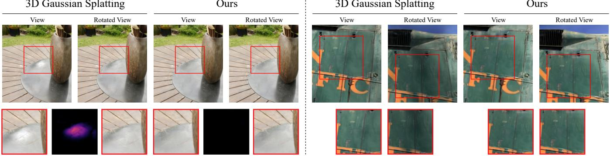
Fig. 1. 3D Gaussian Splating [Kerbl et al. 2023] sufers from popping artifacts during view rotation due to its approximate, global sorting scheme. Our method is able to efectively circumvent short-range popping artifacts (left) and long-range view-inconsistencies (right) during rotation with a novel, hierarchica per-pixel sorting strategy.
Gaussian Splatting has emerged as a prominent model for constructing 3D representations from images across diverse domains. However, the efficiency of the 3D Gaussian Splatting rendering pipeline relies on several simplifications. Notably, reducing Gaussian to 2D splats with a single viewspace depth introduces popping and blending artifacts during view rotation. Addressing this issue requires accurate per-pixel depth computation, yet a full per-pixel sort proves excessively costly compared to a global sort operation. In this paper, we present a novel hierarchical rasterization approach that systematically resorts and culls splats with minimal processing overhead. Our software rasterizer efectively eliminates popping artifacts and view inconsistencies, as demonstrated through both quantitative and qualitative measurements. Simultaneously, our method mitigates the potential for cheating view-dependent efects with popping, ensuring a more authentic representation. Despite the elimination of cheating, our approach achieves comparable quantitative results for test images, while increasing
∗Both authors contributed equally to this work the consistency for novel view synthesis in motion. Due to its design, our hi erarchical approach is only 4% slower on average than the original Gaussian Splatting. Notably, enforcing consistency enables a reduction in the number of Gaussians by approximately half with nearly identical quality and view-consistency. Consequently, rendering performance is nearly doubled, making our approach 1.6x faster than the original Gaussian Splatting, with a 50% reduction in memory requirements. Our renderer is publicly available at https://github.com/r4dl/StopThePop.
CCS Concepts: • Computing methodologies → Rasterization.
Additional Key Words and Phrases: Parallel Computing, Point-based Ren dering, Real-Time Rendering
ACM Reference Format:
Lukas Radl, Michael Steiner, Mathias Parger, Alexander Weinrauch, Bernhard Kerbl, and Markus Steinberger. 2024. StopThePop: Sorted Gaussian Splatting for View-Consistent Real-time Rendering. ACM Trans. Graph. 43, 4, Article 64 (July 2024), 17 pages. https://doi.org/10.1145/3658187
1 INTRODUCTION
In recent years, Neural Radiance Fields (NeRFs) [Mildenhall et al. 2020] have triggered a new surge of research around diferentiable rendering of 3D representations. Leveraging the traditional volume rendering equation, NeRFs are fully diferentiable, enabling continuous optimization to align the representation to diverse input views and support high-quality novel view synthesis. This diferentiability also proves valuable in addressing other rendering challenges that necessitate gradient flow and optimization.
Various strategies have arisen to tackle challenges in NeRFs, particularly mitigating the computational costs linked to multilayer
Authors’ addresses: Lukas Radl, lukas.radl@icg.tugraz.at; Michael Steiner, michael. steiner@tugraz.at, Graz University of Technology, Austria; Mathias Parger, Huawei Technologies, Austria, mathias.parger@huawei.com; Alexander Weinrauch, Graz Uni versity of Technology, Austria, alexander.weinrauch@icg.tugraz.at; Bernhard Kerbl, TU Wien, Austria, kerbl@cg.tuwien.ac.at; Markus Steinberger, Graz University of Technology, Austria and Huawei Technologies, Austria, steinberger@icg.tugraz.at.
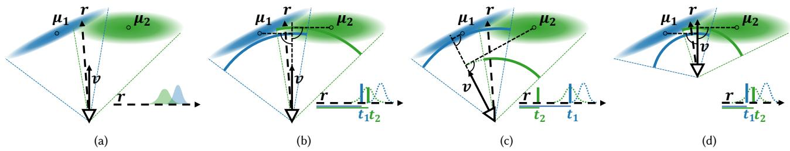
Fig. 2. Efect of collapsing 3D Gaussians into 2D splats and 3DGS’s depth simplification: (a) Integrating Gaussians along view rays r requires carefu consideration of potentially overlapping 1D Gaussians. (b) Using flatened 2D splats and view-space z as depth (projection of z onto v) puts 2D splats on spherical segments around the camera, inverting the relative positions of the two Gaussians along the example view ray. (c) Camera rotation inverts the order along r, resulting in popping. (d) Camera translation does not alter the distance compared to (b).
perceptron (MLP) evaluation. These approaches include adopting direct voxel representations [Fridovich-Keil et al. 2022], employing feature hash maps [Müller et al. 2022], and exploring tensor factorizations [Chen et al. 2022; Tang et al. 2022]—departing to some extent from the original pure MLP design. A recent notable development in this trajectory is 3D Gaussian Splatting (3DGS) [Kerbl et al. 2023], which renders oriented 3D Gaussians with spherical harmonics (SH) as a view-dependent color representation.
Remaining faithful to the traditional volume rendering equation, 3DGS facilitates gradient flows from image errors to the Gaussians’ positions, shapes, densities, and colors. With an initialization based on structure-from-motion [Snavely et al. 2006], a real-time computemode rasterizer, and heuristic-driven densification and sparsification, 3DGS converges to a high-quality representation with compact memory requirements. Consequently, 3DGS has firmly established itself as one of the most widely used methods for 3D scene reconstruction and diferentiable rendering.
Colored, semi-transparent 3D Gaussians serve as a versatile representation, but their accurate rendering is challenging. Although the projection of a 3D Gaussian onto a view ray is straightforward, leveraging synergies between neighboring rays under perspective projection proves intricate. Hence, 3DGS approximates them as flattened 2D splats [Zwicker et al. 2002], necessitating depth-based sorting for rendering. 3DGS further simplifies this step by sorting based on the view-space z-coordinate of each Gaussian’s mean, efectively projecting splats onto spherical shells reminiscent of Broxton et al. [2020]. While this global sorting eases the rendering algorithm, it introduces popping artifacts, i.e., sudden color changes for consistent geometry, during camera rotations due to changes in the relative depth of shells (see Fig. 2). Such view inconsistencies due to popping can be very irritating and immersion-breaking, e.g. during head rotation in a virtual reality setting.
Fully evaluating all Gaussians in 3D along each view ray while considering their overlap would be ideal, but likely not feasible in real-time. The next best solution involves approximating the location where each Gaussian contributes the most for each view ray, i.e., determining its depth, followed by a correct per-pixel blending. Sorting must now happen for each view ray, rather than globally for all Gaussians; an obvious challenge as it is not uncommon to see thousands of Gaussians be considered for individual rays in 3DGS. To solve this challenge, we propose a novel 3D Gaussian Splatting rendering pipeline that exploits coherence among neighboring view rays on multiple hierarchy levels, interleaving culling, depth evaluation and resorting. We make the following contributions:
• A novel hierarchical 3D Gaussian Splatting renderer that leads to per-pixel sorting of Gaussian splats for both the forward and backward pass of the 3DGS rendering pipeline and thus removes popping artifacts.
• An in-depth analysis of culling and depth approximation strategies, as well as pipeline optimizations and workload distribution schemes for our compute-mode 3DGS hierarchical renderer.
• A discussion and evaluation of various sorting strategies of Gaussian splats and their influence on overall rendering quality and view-consistency.
• An efective automatic method to detect popping artifacts in videos captured from trained 3D Gaussians as well as a user study confirming the results of the presented method.
Our results indicate that a full per-pixel sorted renderer for Gaussian splats eliminates all popping artifacts but reduces rendering speed by 100×. Our hierarchical renderer is virtually indistinguishable from a full per-pixel sorted renderer, but only adds an overhead of 4% compared to the original 3DGS.
2 PRELIMINARIES AND RELATED WORK
In the following, we review the renderer used in 3DGS. For a complete description of the approach, cf. Kerbl et al. [2023].
2.1 3D Gaussian Splating
NeRF-style rendering and 3DGS use the volume rendering equation:
�(r) is the output color for a given ray r, � (r, �) is the opacity along the ray and � (r, �) is the view-dependent emitted radiance. 3DGS represents a scene as a mixture of N 3D Gaussians each given by:
� is the Gaussian’s location, � is a rotation matrix and � is a diagonal scaling matrix, allowing to position, rotate and non-uniformly scale
Gaussians in 3D space while ensuring that Σ is positive semi-definite. When evaluating a 3D Gaussian along a ray, the resulting projection is a 1D Gaussian. It seems natural to evaluate Eqn. (1) considering how multiple Gaussians influence any location along the ray. As there is no elementary indefinite integral known for Gaussians, numerical integration is likely the only option. In practice, this would require a strict sorting of all starting and end points of all Gaussians and sampled numerical integration.
Instead, 3DGS makes multiple simplifications. First, they consider all Gaussians to be separated in space, i.e., compress their extent to a Dirac delta along the ray. Second, the Dirac delta of the i-th Gaussian is located at
i.e., the projection of the mean onto the view direction v, independent of the individual ray r. Third, they approximate the projection of the Gaussian onto all rays, relying on an orthogonal projection approximation considering the first derivative of the 3D Gaussian to construct a 2D splat [Zwicker et al. 2002].
These approximations enable faster rendering: Eqn. (1) becomes
where � iterates over the Gaussians that influence the ray in the ordering of and �� is the opacity of the Gaussian along the ray, , multiplied by a learned per-Gaussian opacity value.
Because is independent of r, a global sort of all � is possible. Naïvely, this would lead to for all rays. To reduce the number of Gaussians considered per ray, 3DGS splits the image into 16×16 pixel tiles, and runs a combined depth and tile sorting pre-pass, before evaluating Eqn. (3). For each tile and each Gaussian that may potentially contribute to any pixel in this tile—considering the 2D bounding box around the 1% Gaussian contribution threshold—a sorting key is generated with the tile index in the higher order bits and the depth in the lower bits. Sorting those combined keys leads to a sorted list for each tile.
2.2 Radiance Field Methods
Contrary to 3DGS, NeRFs [Mildenhall et al. 2020] require sampling a continuous, implicit neural scene representation densely. Therefore, real-time rendering as well as handling unbounded scenes proves dificult. Many follow-up works investigated NeRF extensions to handle unbounded scenes [Barron et al. 2021, 2022, 2023] as well as faster rendering [Chen et al. 2022; Fridovich-Keil et al. 2022; Müller et al. 2022], 3D scene editing [Jambon et al. 2023; Kuang et al. 2023; Nguyen-Phuoc et al. 2022], avatar generation [Zielonka et al. 2023], scene dynamics [Park et al. 2021; Pumarola et al. 2020] and 3D object generation [Jain et al. 2022; Poole et al. 2022; Raj et al. 2023].
2.3 3DGS Follow-up Work
Following the code release and subsequent publication of 3DGS, several extensions have popped up investigating various paradigms, including the editing of trained Gaussians [Chen et al. 2023; Fang et al. 2023], text-to-3D [Tang et al. 2023; Yi et al. 2023] and 4D novel view synthesis [Luiten et al. 2024; Wu et al. 2023]. Mip-Splatting [Yu et al. 2023] proposes a 3D smoothing filter and 2D Mip filter to remedy aliasing in 3DGS. Besides them, most approaches merely leverage Gaussians as graphics primitives, whereas our approach tackles current problems with 3DGS.
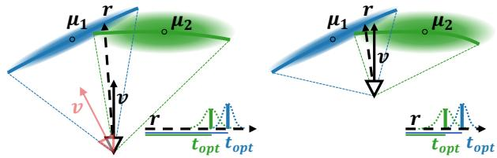
Fig. 3. Our approach to compute avoids popping by placing splats at the point of maximum contribution along the view ray r, creating sort orders independent of camera rotation (red view vector). Note that the shape of is a curved surface and changes with the camera position; cf. Fig. 2.
2.4 Software Rasterization
Our compute-mode rendering pipeline for 3DGS is related to other software-based rendering pipelines. Early works like Pomegranate [Eldridge et al. 2000] and the Larrabee project [Seiler et al. 2008] showed that software pipelines on custom hardware are viable for rendering. Special compute-mode rendering pipelines have been proposed for REYES [Tzeng et al. 2010; Zhou et al. 2009], triangle rasterization [Karis et al. 2021; Kenzel et al. 2018; Laine and Karras 2011; Liu et al. 2010; Patney et al. 2015] and point clouds [Schütz et al. 2021]. Similarly to these eforts, we show that taking into account the specifics of the rendering problem, a compute-mode renderer for sorted Gaussian splats can execute in real-time on modern GPUs.
2.5 Order Independent Transparency
Correctly and eficiently rendering semi-transparent primitives, such as Gaussian splats, proves intricate for rasterization-based renderers. Methods approximating order independent transparency [Wyman 2016] investigate this paradigm. z-bufers [Bavoil et al. 2007; Callahan et al. 2005] operate with a fixed per-pixel memory budget, circumventing the large memory requirement of z- bufers [Carpenter 1984]. When this budget is exceeded, new incoming fragments are either merged [Salvi et al. 2011; Salvi and Vaidyanathan 2014] or the closest fragment gets written to the color bufer [Callahan et al. 2005]; both cases require a nearly-sorted order for incoming fragments. Our work combines hierarchical levels of z-bufers with 3DGS’s tile-based rasterization.
3 REAL-TIME SORTED GAUSSIAN SPLATTING
We present a novel per-pixel sorted 3D Gaussian splatting approach, departing from the current global sorting paradigm. Utilizing fast per-pixel depth calculations and a hierarchical intra-tile cooperative sorting approach, our method enhances the accuracy of the resulting sort order. To streamline computations, we incorporate per-tile opacity culling and a fast and GPU-friendly load balancing scheme.
3.1 Global Sorting
3DGS [Kerbl et al. 2023] performs a global sort based on the viewspace z-coordinate of each Gaussian’s mean �, see Eqn. (2). This leads to a consistent sort order during translation, but not during rotation, as illustrated in Fig. 2. While 3DGS may use this fact during training to introduce diferences between views (and thus reduce the loss), it is in general undesirable, as camera rotations can lead to popping artifacts, which are particularly disturbing when inspecting the optimized 3D scene. Our objective is to stabilize color compu tations under rotation by splatting Gaussians based on the point of highest contribution along each view ray. Note that, although we improve rendering consistency, we still approximate true 3D Gaussians, neglecting any overlap between them.
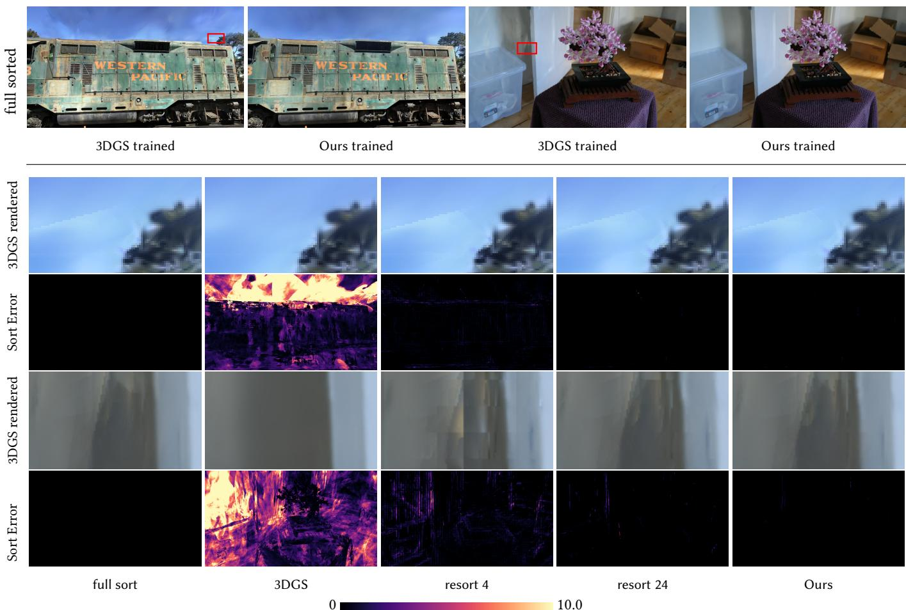
Fig. 4. Correct rendering of a trained 3DGS scene with per-pixel sorting reveals how 3DGS cheats with the location of Gaussians. Our approach, on the other hand, considers correct sorting during training and rendering. Below, we show the sort error of diferent resorting windows and our full approach cf. Tab. 1. We intentionally use the trained 3DGS model here, as our trained version does not show these kinds of artifacts for visualization. The error visualization captures the sum over the depth diference of all wrongly sorted neighbors. For resorting with a window size of 4, tile artifacts are still visible. Our approach hardly diverges from fully sorted rendering, while running 100× faster; it is also about 5× faster than resort 24 and on average only 4% slower than 3DGS.
3.2 Per-pixel Depth and Naïve Sorting
When replacing a 1D Gaussian along the view ray with a Dirac impulse, the mean/maximum ofthis 1D Gaussian is arguably the best discrete blend location. This maximum, , can be computed from the derivative of the 3D Gaussian along the view ray
Please see Appendix A for the step-by-step derivation.
Consider a simple 2D case with an isotropic Gaussian the camera at (0, 0) and the Gaussian at . It is easy to see that the depth function follows a cosine as d is normalized:
where is the angle of the view ray. Thus, we conclude that there is no simple primitive, like, e.g., a plane to represent the which could be rasterized traditionally, see Fig. 3. Therefore, we compute �� � on a per-ray basis.
When reconstructing surfaces, Gaussians often turn very flat, as such, may become large and lead to instabilities in the computation. Bounding the entries of removes those instabilities in our experiments, by efectively thickening very thin Gaussians, with minimal impact on the computed depth.
With the computation of in place, we can eliminate all popping artifacts and ensure perfect view-consistency by sorting all
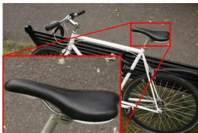
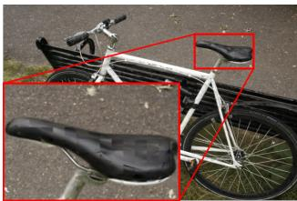
(a) w/o per-tile depth
(b) w/ naïve per-tile depth
Fig. 5. Comparison of 3DGS with and without per-tile depth calculation. Per-tile depth calculation lowers sorting errors compared to . However, doing this without additional per-pixel sorting leads to artifacts at the tile borders.
Gaussians per ray by their value. Unfortunately, even the simplest 3DGS reconstructions consist oftens ofthousands ofGaussians, often leading to thousands of potentially contributing Gaussians per view ray. Furthermore, early ray termination cannot be performed before sorting, as it is dependent on the sort order. Even an optimized parallel per-ray sort on top of the original 3DGS tile-based rasterizer leads to slowdowns of more than 100×, not only making the approach impractical for real-time rendering, but also impeding optimization.
3.3 Per-tile Sorting and Local Resorting
Although it is not possible to describe with a simple primitive for rasterization, we may still rely on the fact that is smooth across neighboring rays. As such, the sorting order of neighboring rays should also be similar. Because sorting in 3DGS already happens with a combined tile/depth key, we could replace the global depth with an accurate per-tile depth value for each Gaussian, e.g., using the tile center ray for Eqn. (4). As can be seen in Fig. 5, using per-tile depth clearly leads to artifacts along the tile borders.
With that in mind, we propose a simple per-ray resorting extension. Instead of immediately blending the next Gaussian when walking through the tile list, we keep a small resorting window in registers. When loading a Gaussian, we evaluate its and use insertion sort to place it in the resorting window. If the window overflows, we blend the sample with the smallest depth. This simple method follows the idea of z-bufers [Bavoil et al. 2007; Callahan et al. 2005] without fragment merging, which requires the Gaussians along a ray to be nearly-sorted. Although this sorting strategy is easy to implement, it already achieves good results for a resorting window of about 16 to 24, removing the majority of visible popping artifacts in our tested scenes. To confirm the improvement in blend ing order, we compute a per-ray sort error ε: If two consecutive Gaussians are out of order, we accumulate their diference in ����. We present a visual example in Fig. 4, with corresponding runtimes and � in Tab. 1 — evidently, even though � decreases with a larger resorting window, there is a non-negligible increase in runtime.
3.4 Hierarchical Rendering
Local resorting is already able to significantly improve the per-pixel sort order, which greatly reduces popping artifacts. To tackle the imposed performance overhead, we insert additional resorting levels between tiles and individual threads, creating a sort hierarchy. In this way, we can share sorting eforts between neighboring rays, while incrementally refining the sort order as we move towards individual rays. By additionally culling non-contributing Gaussians at every level of the hierarchy, we can drastically reduce sorting costs. We propose a hierarchical rendering pipeline that relies on the innate memory and execution hierarchy of the GPU to minimize the number of memory access operations, as outlined in Fig. 7. For a fair comparison, we intentionally only alter the blend order of Gaussians and leave the other parts of 3DGS untouched, including the 2D splatting approximation from Zwicker et al. [2002].
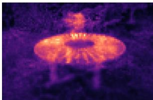
(a) w/o tile-based culling
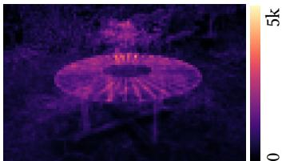
(b) w/ tile-based culling
Fig. 6. Number of Gaussians per tile with and without tile-based culling for the Mip-NeRF 360 Garden scene. The average number of Gaussians per tile is reduced by ∼ 44%.
Table 1. Maximum sort error over all pixels and average sort error for two representative example views from Fig. 4. A full sort per ray increases rendering times (relative to 3DGS) by more than 100×. Local resorting with a sort window of 16 to 24 removes the majority of visible popping artifacts, yet increases rendering time 2 to 6×. Our hierarchical approach improves sort quality further and keeps processing time low. Note that a larger sorting window may lead to more Gaussians being fetched and thus our measurement of may increase with larger sort windows.
| 3DGS | Full | Resorting Window | Ours | |||||
| 4 | 8 | 16 | 24 | |||||
| Tain | 28.445 | 0.000 | 5.867 | 3.882 | 3.544 | 4.580 | 0.575 | |
| 3.688 | 0.000 | 0.124 | 0.045 | 0.014 | 0.007 | 0.003 | ||
| 1.00 | 142.03 | 1.21 | 1.66 | 2.70 | 4.22 | 0.92 | ||
| 33.543 | 0.000 | 12.786 | 8.954 | 6.391 | 5.595 | 3.098 | ||
| Bonnsaı | 3.786 | 0.000 | 0.265 | 0.110 | 0.039 | 0.019 | 0.006 | |
| 1.00 | 179.70 | 1.76 | 2.58 | 4.33 | 6.88 | 1.47 | ||
Tile-based culling. We propose a fast tile-based culling approach that bounds Gaussians to exactly those tiles they contribute to. For each ray, Kerbl et al. [2023] disregard Gaussians with a contribution below , which forms an exact culling condition. Like 3DGS, we start with an axis-aligned bounding rectangle using the largest eigenvalue of the 2D covariance matrix to determine which tiles may potentially be touched during both Preprocess and Duplication. This conservative estimate gives very large bounds for highly anisotropic Gaussians.
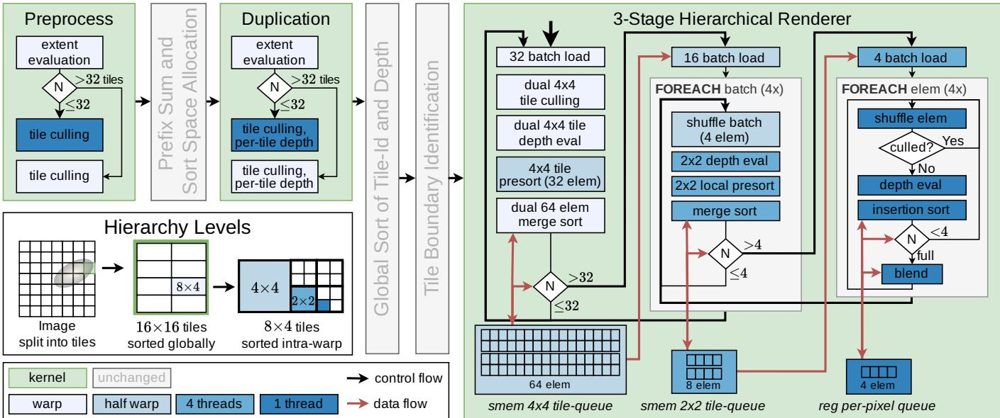
Fig. 7. Overview of the detailed steps in our pipeline. We add load balancing, tile culling and per-tile depth evaluation to the first two stages of 3DGS. Our hierarchical rasterizer utilizes three sorted queues, going from 4×4 tiles over 2×2 tiles to individual rays. The queues store only id and the tile’s per Gaussian, while additional information is re-fetched from global memory on demand, and shared between threads via shufle operations. Depending on the queue fill levels, we switch between diferent cooperative group sizes while ensuring the queues remain filled for efective sorting. Our pipeline achieves an overall sorting window of 25-72 elements.
For exact culling, we then calculate the point xˆ inside each tile T that maximizes the 2D Gaussian’s contribution :
If . If �2 ∉ �, then xˆ must lie on one of the two tile edges closest to , due to Gaussians being monotonic along rays pointing away from . We can then compute the maximum along those two edges (similar to Eqn. (4), but in 2D) and clamp the resulting values to obtain xˆ (see the Appendix B.1 for the full algorithm). Finally, we evaluate to perform the comparison with , which significantly reduces the number of Gaussians per tile (cf. Fig. 6).
Tile-depth Adjustment. For pre-sorting we require a representative per tile. Intuitively, the center ray of the tile should be a valid compromise for all rays in the tile. However, this completely ignores the fact that a Gaussian in general does not uniformly contribute to all rays in a tile. Especially for small Gaussians whose main extent is approximately parallel to the view rays, the center ray may result in depth estimates far away from any contribution made by the Gaussian.
Arguably, the weighted integral (x)�x is a better estimate. Yet, even a numerical approximation considering all rays in the tile T is too compute-intensive. Thus, we approximate it with a single sample: the one with the highest weight within a tile, i.e., xˆ. Since xˆ was already calculated during culling, we only need to construct the corresponding ray to evaluate . The optimized depth location reduces from (1.553, 0.006) to (0.575, 0.003) and (3.917, 0.014) to (3.098, 0.006) for the views in Tab. 1.
Load Balancing. Similar to other compute-mode rasterization methods, primitives that cover a large portion of the screen may become an issue ifa single thread evaluates their coverage. For 3DGS, this is the case in the first two stages of the rendering pipeline, which operate on a per-Gaussian basis. For our method, tile-culling and per-tile depth calculations increase the workload of these stages, which further amplifies this problem.
To remedy this issue, we propose a two-stage load balancing scheme: In the first phase, each thread responsible for a Gaussian which covers fewer than a predetermined maximum number of tiles, performs its own processing. We empirically determined that a maximum of 32 tiles results in good performance. Most threads are typically idle after this initial phase. In the second phase, we distribute the remaining workload within each warp using warp voting and shufle instructions. For close-ups and high-resolution rendering, where single Gaussians often cover a large portion of the screen, our approach can speed up Preprocess and Duplication by up to 10×.
Hierarchically Sorted Rendering. With the goal of establishing a hierarchical rendering pipeline, a naïve approach is to design one kernel per hierarchy level. However, such an approach would require communication via slow global memory between the levels and would prohibit early ray termination after reaching the opacity threshold. Thus, we opt for combining the final three levels of our rendering hierarchy in a single kernel, where multiple threads cooperatively sort and manage shared queues, as detailed in Fig. 7. We use a large 4×4 tile-queue of 64 elements (managed by 16 threads), feeding into four eight-element 2×2 tile-queues. Finally, each 2×2 tile-queue feeds into four per-pixel queues with four elements, managed by one thread each. For one 16×16 tile, we thus start 256 threads, allocate 16 4×4 tile-queues and 64 2×2 tile-queues in shared memory as well as one per-pixel queue per thread in registers. Each queue stores only the Gaussian’s id and the current level’s depth . Additional information is loaded on demand from global memory and shared between threads of the hierarchical level via shufle operations, during depth calculation, or during culling and blending.
The queues follow a push methodology to keep queue fill rates as high as possible, ensuring that resorting remains efective. While 16 threads (a halfwarp) are assigned to each 4×4 tile-queue, we load and feed batches of 32 into two 4×4 tile-queues at once, allowing all threads within a warp to load data together. After loading, each thread performs tile-based culling (as described before, but for a 4×4 tile), followed by computing . For culled Gaussians, we set . Then, each halfwarp sorts the 32 newly loaded elements using Batcher Merge Sort [Batcher 1968] before writing them to the back of the 4×4 tile-queue. Typically, there are now two individually sorted parts in the 4×4 tile-queue: the already present elements (up to 32) and the newly added (up to 32). As both are sorted, we use eficient merge sort to combine them. Culled Gaussians are now at the back of the queue and can be discarded.
While there are more than 32 elements in the 4×4 tile-queue, we push batches of size 16 into the 2×2 tile-queue. Each thread in the halfwarp re-fetches the data needed for computing for a single Gaussian. Each group of four threads then pushes sub-batches of size four into their 2×2 tile-queue, relying on shufle instructions to update for each 2×2 tile. We follow the same approach as before: we sort the four new entries according to depth, for which we use a simple coordination using shufle instructions. We then use merge sort to combine the new elements with the existing ones.
After the 2×2 tile-queue is filled, we draw four elements from it and insert them into the per-pixel queue. Again, we batch-load the needed data using the four threads assigned to the respective 2×2 tile-queue, and again use shufle instructions to communicate all relevant information for each Gaussian to all other threads in the 2×2 tile. We evaluate and � for the respective rays and insert the newly computed data into the per-pixel queue. If the Gaussian’s α is below , we simply discard it. As we add elements one by one into the per-pixel queue, we rely on simple insertion sort. Only if the per-pixel queue is full, we take one element from it and perform blending, freeing up space for the next element from the 2×2 tile-queue.
Due to the hierarchical structure, we efectively construct an overall sort window varying between 25 and 72, where the minimum is hit if the 4×4 tile-queue is drained down to 17 elements, with 4 elements remaining in the other queues. 72 elements are sorted if we fill the 4×4 tile-queue with 64 elements and then move 4 elements through the half-filled 2×2 tile-queue and the filled per-pixel queue. While our sort setup typically achieves better sorting than a simple per-thread sort window of 25, we may occasionally achieve worse sorting, as the higher-level queues are shared between threads.
The sizes of the three queues are variable, with some restrictions. The 4×4 tile-queue size is constrained to 32n + 32, with as this enables eficient warp-wide merge sort. Similarly, the 2×2 tile-queue must be of size 4m + 4, with , as it is managed by four threads. The per-pixel queue size can be chosen arbitrarily. We heuristically decided on for the three queue sizes, as this achieves a large enough sort window, while limiting shared memory requirements and register pressure, ultimately leading to better performance. We provide ablations for our chosen queue sizes and load balancing thresholds in Appendix E.
3.5 Backward Pass
Contrary to 3DGS, we perform gradient computations in front-toback blending order, avoiding the large memory overhead required for storing per-pixel sorted Gaussians—which would be needed to restore the correct blending order.
Gradient computation in 3DGS, independent of direction, requires the final accumulated transmittance and the final per-pixel color C(r). To compute gradients for the i-th Gaussian along a view ray, we require the contribution of all subsequently blended Gaussians. Crucially, rather than accumulating the contribution of subsequent Gaussians back-to-front, we use subtraction and division, i.e.
(7)
where is the accumulated output color including the �-th Gaussian in front-to-back order. As we perform the same rendering routine as in the forward pass, including early stopping, the backward pass is equally eficient. Note that this does not change the stability of the gradient computations; 3DGS also relies on a division. Arguably, our approach may even lead to more accurate gradients as the Gaussians blended first along a ray have a higher contribution to the final color and computing those first, will accumulate less floating point errors compared to reversing the computation.
It is imperative that the same exact sort order is used between forward and backward pass to ensure correct gradients. Like 3DGS, we keep the global sort order in memory, which ensures that potentially equal depth values do not lead to diferent sorting results. In our implementation, we use stable sorting routines throughout: Batcher Merge Sort [Batcher 1968] is stable by design, our merge sort routines rely on each thread’s rank to establish sort orders among equal depths, and our insertion sort is trivially stable.
4 EVALUATION
For evaluation, we follow Kerbl et al. [2023] and use 13 real-world scenes from Mip-NeRF 360 [Barron et al. 2022], Deep Blending [Hedman et al. 2018] and Tanks & Temples [Knapitsch et al. 2017].
Opacity Decay. A viable approach to reduce the total number of Gaussians after optimization is replacing 3DGS’s opacity reset with a standard Opacity Decay during training. Every 50 iterations, we multiply each Gaussian’s opacity with a constant We find that this modification results in significantly fewer, but larger Gaussians, potentially causing exacerbated popping.
Table 2. Image metrics for our method, 3DGS and related work. Results with dagger (†) are reproduced from Kerbl et al. [2023] to facilitate cross-method comparisons. Our quality is comparable to 3DGS. With Opacity Decay, our approach loses slightly less quality than 3DGS.
| Dataset Metric | Deep Blending | Mip-NeRF 360 Indoor PSNR{↑ | Mip-NeRF 360 Outdoor | Tanks & Temples | LPIPS↓ | LIP↓ | ||||||||||
| PSNR↑ | SSIM↑ | LPIPS↓ | SSIM↑ | LPIPS↓ | πLIP↓ | PSNR↑ | SSIM↑ | LPIPS↓ HLIP↓ | PSNR↑ | SSIM{ | ||||||
| Mip-NeRF 360† | 29.40 | 0.900 | 0.245 | 0.138 | 31.57 | 0.914 | 0.182 | 0.088 | 24.42 | 0.691 | 0.286 | 0.170 | 22.22 | 0.758 | 0.256 | 0.232 |
| Instant-NGP (base)† | 23.62 | 0.797 | 0.423 | 0.258 | 28.65 | 0.840 | 0.281 | 0.120 | 22.63 | 0.536 | 0.444 | 0.203 | 21.72 | 0.723 | 0.330 | 0.245 |
| Instant-NGP (big)† | 24.96 | 0.817 | 0.390 | 0.222 | 29.14 | 0.863 | 0.241 | 0.114 | 22.75 | 0.567 | 0.403 | 0.200 | 21.92 | 0.745 | 0.304 | 0.241 |
| Plenoxels† | 23.09 | 0.794 | 0.425 | 0.244 | 24.84 | 0.765 | 0.366 | 0.182 | 21.69 | 0.513 | 0.467 | 0.229 | 21.09 | 0.719 | 0.344 | 0.262 |
| 3DGS | 29.46 | 0.900 | 0.247 | 0.131 | 30.98 | 0.922 | 0.189 | 0.094 | 24.59 | 0.727 | 0.240 | 0.167 | 23.71 | 0.845 | 0.178 | 0.199 |
| Ours | 29.86 | 0.904 | 0.234 | 0.127 | 30.62 | 0.921 | 0.186 | 0.099 | 24.60 | 0.728 | 0.235 | 0.167 | 23.21 | 0.843 | 0.173 | 0.216 |
| 3DGS (Opacity Decay) | 28.94 | 0.894 | 0.262 | 0.134 | 30.57 | 0.918 | 0.198 | 0.097 | 24.45 | 0.718 | 0.261 | 0.169 | 23.52 | 0.839 | 0.194 | 0.205 |
| Ours (Opacity Decay) | 29.84 | 0.905 | 0.241 | 0.126 | 30.03 | 0.917 | 0.194 | 0.103 | 24.46 | 0.722 | 0.254 | 0.169 | 23.18 | 0.839 | 0.184 | 0.214 |
4.1 Quantitative Evaluation
Image Metrics. For our quantitative evaluation, we report PSNR, SSIM, LPIPS [Zhang et al. 2018] and FLIP [Andersson et al. 2020] in Tab. 2. To facilitate cross-method comparisons, we reproduce the results from Kerbl et al. [2023] for Mip-NeRF 360 [Barron et al. 2022], Instant-NGP [Müller et al. 2022] and Plenoxels [Fridovich-Keil et al. 2022]. For Deep Blending and Mip-NeRF 360 Outdoor, we outperform 3DGS. For Tanks & Temples and Mip-NeRF 360 Indoor, our model performs slightly worse, which we attribute to 3DGS’s ability to fake view-dependent efects with popping. When enabling Opacity Decay, which results in ∼50% fewer Gaussians, our method retains more quality than 3DGS. In general, our approach performs comparably to 3DGS in terms of standard image quality metrics.
Popping. View inconsistencies between subsequent frames, such as popping, cannot be detected with standard image quality metrics. To detect such artifacts, we follow recent best practice in 3D style transfer [Nguyen-Phuoc et al. 2022] and measure the consistency between novel views and warped novel views with optical flow [Lai et al. 2018]. While ground-truth images or videos may seem attractive, they vary significantly in location and thus view-dependent efects or only exist for a small subset of our used datasets. For our method and 3DGS, we capture videos from three separate camera paths per scene, exhibiting both rotation and translation. We then directly warp each frame to a subsequent frame with ofset � using optical flow predictions from state-of-the-art RAFT [Teed and Deng 2020].
Measuring the error between the warped frame and the rendered frame with MSE does not prove efective to detect popping artifacts (see Fig. 9). MSE tends to weigh small inaccuracies that originate from warping higher than popping artifacts. FLIP [Andersson et al. 2020] proves significantly more reliable in our experiments, as it approximates the diference perceived by humans when flipping between images — a scenario in which popping artifacts are particularly disturbing. For each frame, we calculate a consistency error . For each video, consisting of frames, we then compute the mean FLIP error as
Note that the error metric includes a base error floor due to disocclusions under translation and correct view-dependent shading.
To mitigate these issues, we use an occlusion detection method from Ruder et al. [2016], do not consider the outermost 20 pixels, and subtract the per-pixel minimum score — clearly, this does not perturb the inter-method diferences.
We use t = 1 and t = 7 to measure short-range and long-range consistency, following Nguyen-Phuoc et al. [2022]. Tab. 3 shows our obtained results. The large margins, particularly for FLIP7, highlight that our method is more view-consistent than 3DGS. We argue that is a more reliable metric, allowing errors due to popping to accumulate over multiple frames, as can be seen in Fig. 8. Please see the supplementary video for further evidence. With Opacity Decay, our approach achieves virtually identical results, indicating that our method can handle large Gaussians. For 3DGS, popping is significantly increased, indicating that 3DGS may increase the number of Gaussians to hide imperfections in the renderer, while our approach achieves comparable view-consistency scores.
Table 3. View-consistency metrics for videos. We measure FLIPt for timesteps t ∈ {1, 7} (lower is beter). Our method outperforms 3DGS with and without Opacity Decay.
| Dataset Metric | DB | M360 Indoor | M360 Outdoor | T&T | ||||
| ALIP1 | ALIP7 | LIP1 | ALIP7 | πLIP1 | ALIP7 | πLIP1 | LIP7 | |
| Without Opacity Decay | ||||||||
| 3DGS Ours | 0.0061 | 0.0114 | 0.0069 | 0.0134 | 0.0083 | 0.0148 | 0.0102 | 0.0286 |
| 0.0053 | 0.0059 | 0.0060 | 0.0077 | 0.0085 | 0.0122 | 0.0076 | 0.0113 | |
| With Opacity Decay | ||||||||
| 3DGS | 0.0063 | 0.0122 | 0.0072 | 0.0149 | 0.0083 | 0.0154 | 0.0107 | 0.0315 |
| Ours | 0.0052 | 0.0055 | 0.0060 | 0.0073 | 0.0083 | 0.0115 | 0.0076 | 0.0114 |
Depth Evaluation. 3DGS enables eficient extraction of depth values with volumetric rendering:
where describes the depth of a single Gaussian with location (in 3DGS’s case, . Clearly, this depth estimate is dependent on the sort order, leading to problems for 3DGS’s approximate global sort. Our approach improves sort quality and places 2D splats at the points of maximum contribution ���� , cf. Eqn. (4)).
Table 4. Depth-consistency metric for 3D points from COLMAP [Schönberger and Frahm 2016] (lower is beter). We report the mean results over all test set views. Our method outperforms 3DGS with and without Opacity Decay In total, we consider points without opacity decay and with opacity decay.
| Dataset | DB | M360 Indoor | M360 Outdoor | T&T | Average |
| Method | Without Opacity Decay | ||||
| 3DGS | 0.133 | 0.219 | 0.764 | 1.108 | 0.552 |
| Ours | 0.122 | 0.242 | 0.387 | 0.947 | 0.388 |
| With Opacity Decay | |||||
| 3DGS | 0.095 | 0.127 | 0.637 | 0.967 | 0.447 |
| Ours | 0.073 | 0.168 | 0.408 | 0.916 | 0.361 |
We establish a metric to compare multi-view consistency in depth estimates, leveraging the sparse point cloud from COLMAP [Schönberger and Frahm 2016], which serves as initialization for 3DGS. is visible from a camera with position we reconstruct the estimated location with rendered depth and view direction d of the corresponding pixel of . The black background for real-world scenes used by 3DGS enables cheating by not fully accumulating opacity and blending the background color. For a fair comparison, if any of the tested methods has for a poin we do not consider this point in our set of tested points To minimize errors due to resolution, we render at the resolution used for COLMAP when computing . Finally, we establish the depth error as
We compute for all test set views and report our results in Tab. 4. On average, our method achieves better scores than 3DGS, especially for the outdoor scenes of Mip-NeRF 360 [Barron et al. 2022]. Opacity decay leads to significantly fewer and larger Gaussians, resulting often in lower accumulated opacity and, consequently, more discarded points. Both methods achieve better results for in this case, as these removed points often correspond to the background, where depth estimates are generally less precise.
4.2 Qualitative Evaluation
To complement our quantitative evaluation, we provide image comparisons in Fig. 10 and conduct a user study to verify the efectiveness of our approach and our proposed popping detection method.
4.2.1 User Study. 18 participants were presented with pairs of videos from our approach and 3DGS, following the same camera path. The captured scenes exhibit rotation, translation, as well as a combination of the two. We instructed the participants to rate the videos concerning view-consistency and popping artifacts. The participants then indicated whether either of the techniques performed better or equal, which we translated into scores (−1, 0, +1). On average, the results showed a clear preference for our approach , which is statistically significant according to Wilcoxon Signed Rank tests . Details about the study can be found in Appendix D.
Table 5. Performance timings for diferent configurations of our method and 3DGS. The number of Gaussians is roughly the same for all methods (scene average ∼2.98M). Applying Opacity Decay during training leads to ∼ 50% fewer Gaussians (scene average ∼1.54M).
| Timings in ms | Preprocess | Duplicate | Sort | Render | Total |
| Without Opacity Decay | |||||
| 3DGS | 0.451 | 0.567 | 1.645 | 2.134 | 4.797 |
| (A) Ours | 0.649 | 0.437 | 0.301 | 3.599 | 4.986 |
| (B) Ours w/o per-tile depth | 0.658 | 0.283 | 0.301 | 3.599 | 4.841 |
| (C) Ours w/o load balancing | 0.847 | 2.059 | 0.415 | 3.505 | 6.827 |
| (D) Ours w/o tile-based culling | 0.610 | 0.479 | 1.180 | 5.346 | 7.614 |
| (E) Ours w/o hier. culling | 0.649 | 0.437 | 0.301 | 5.967 | 7.364 |
| With Opacity Decay | |||||
| 3DGS | 0.215 | 0.378 | 0.626 | 1.059 | 2.276 |
| Ours | 0.366 | 0.223 | 0.161 | 2.227 | 2.976 |
4.3 Performance and Ablation
In the following, we provide a detailed performance analysis for diferent configurations of our method. For our timings, we take all available COLMAP poses and interpolate a camera path between them (30 frames per pose), ensuring a variety ofplausible viewpoints. All timings were measured for Full HD rendering and averaged over 4 runs, where we used an NVIDIA RTX 4090 with CUDA 11.8.
Performance for diferent configurations. We provide a performance comparison between 3DGS and our renderer with diferent configurations in Tab. 5. On average, the Render stage takes considerably longer for our hierarchical renderer (A-E) due to ad ditional per-ray sorting. Not computing the per-tile depth (B) only marginally speeds up the Duplicate stage. Without our load balancing scheme (C), Duplicate takes 5× longer, as it is mostly dominated by very large Gaussians. Disabling tile-based culling (D) slightly accelerates Preprocess but leads to many more entries in the global sorting data structure, which increases Sort and Render times. Disabling hierarchical culling inside the render kernel (E) leads to a drastic increase in Render time as all Gaussians move through the entire pipeline. Our final approach (A) with all optimizations achieves competitive runtimes on all evaluated scenes. Both methods see a drastic performance increase with Opacity Decay due to the significantly lower number of Gaussians—however, while our approach stays view-consistent, 3DGS shows even more popping artifacts.
Scene Comparison. Individual scenes with a similar number of Gaussians can exhibit sharp diferences in runtime behavior. In Tab. 6 and Tab. 7, we show detailed timings and metrics for two exemplary scenes - Bonsai and Train - which display the largest inter-method diferences in performance, despite their comparable number of Gaussians �. Even though the Train scene contains slightly fewer Gaussians than Bonsai, the average number of visible (inside the view-frustum) Gaussians , as well as their average screen-space size (indicated by avg./std. corresponding image tiles , is considerably larger.
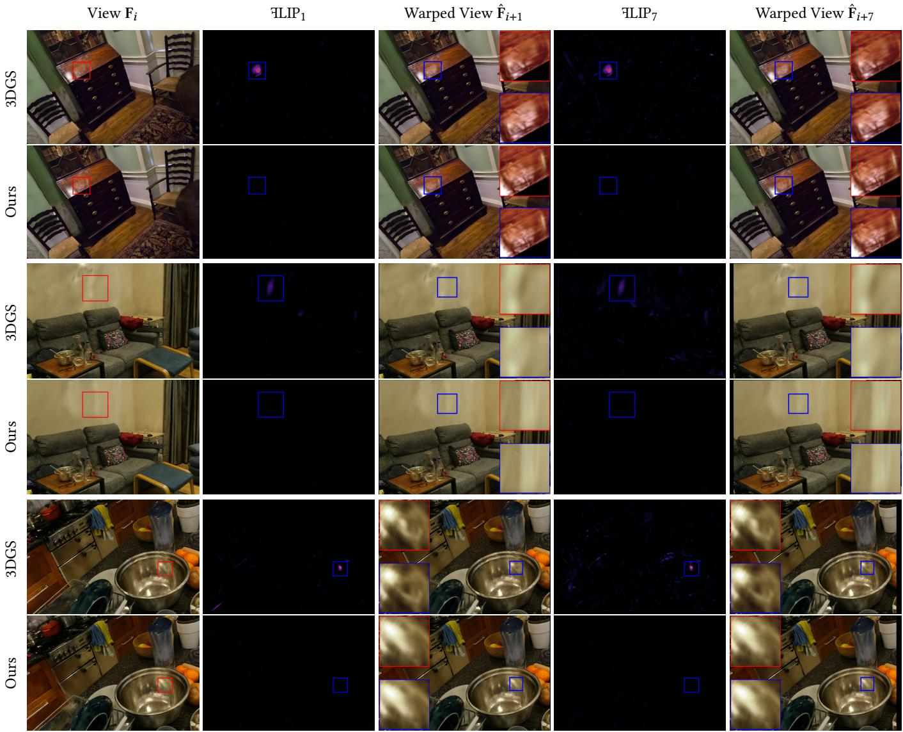
Fig. 8. Visualization of our proposed popping detection method with detailed views inset. We warp view using optical flow and use FLIP to measure errors between warped and non-warped views. While is able to efectively detect popping artifacts, the obtained errors are only accumulated over a single frame. On the contrary, FLIP7 is able to accumulate errors due to popping over multiple frames, making this metric more reliable. We increased contrast for the zoomed-in views to beter highlight view-inconsistencies.
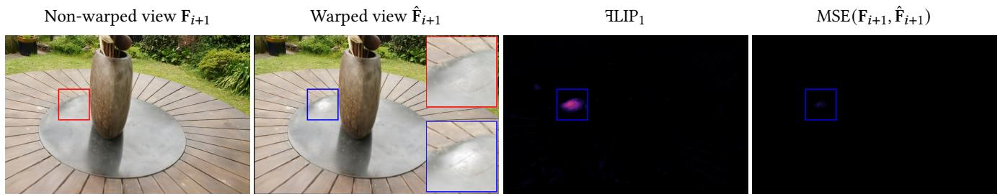
Fig. 9. Comparison between FLIP and MSE to measure diferences between rendered frames and warped frames for 3DGS. Notably, using MSE does not yield large errors even when disturbing popping artefacts are encountered — FLIP, on the other hand, weighs such artifacts accordingly.
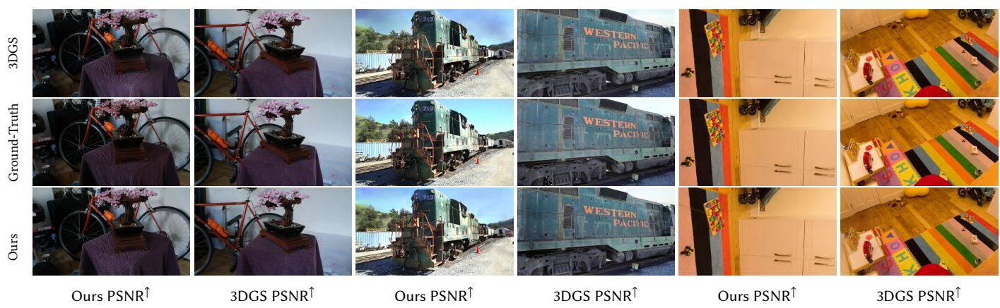
Fig. 10. Image comparisons of our method and 3DGS. In most configurations, our rendered images are virtually indistinguishable from 3DGS. For each scene, we show a result where our method performs beter on the left, and a result where 3DGS performs beter on the right.
Table 6. Performance timings for diferent configurations of our method and 3DGS for the exemplary scenes Bonsai & Train, which show contrary runtime behaviors. Times in ms for Full HD resolution.
| Timings in ms Preprocess Duplicate SortRender Total | |||||||
| Bonsai, ~1.25M Gaussians3DGS 0.224 0.384 0.700 1.266 2.574(A) Ours 0.295 0.321 0.173 2.610 3.399(C) Ours w/o load balancing 0.467 1.920 0.272 2.592 5.251(D) Ours w/o tile-based culling 0.282 0.331 0.554 3.680 4.846 | |||||||
| 0.224 | 0.3840.700 | 1.266 | 2.574 | ||||
| 0.295 | 0.321 | 0.173 | 2.610 | 3.399 | |||
| 0.467 | 1.920 | 0.272 | 2.592 | 5.251 | |||
| 0.282 | 0.331 | 0.554 3.680 4.846 | |||||
| Train, ~1.05M Gaussians3DGS 0.288 0.811 2.451 1.998 5.548 | |||||||
| 0.288 | 0.811 | 2.451 | 1.998 | 5.548 | |||
| (A) Ours | 0.409 | 0.495 | 0.270 | 3.052 | 4.225 | ||
| (C) Ours w/o load balancing | 0.647 | 2.336 | 0.333 | 2.899 | 6.215 | ||
| (D) Ours w/o tile-based culling | 0.323 | 0.542 | 1.550 | 5.054 | 7.469 | ||
Table 7. Metrics of our method and 3DGS for exemplary scenes Bonsai & Train, highlighting the efect of our tile-based culling. Columns include total vs. visible (in view-frustum) number of Gaussians (� vs. ��), as well as standard deviation and average number of 16×16 tiles covered by each visible Gaussian (��). We additionally include an approximate number of sort entries as �� · avg(�� ).
| Scene | Method | N | Nv avg(Nt) | std(Nt) | Sort Entries | |
| Bonsai | Ours | 1.26M | 0.41M | 4.198 | 15.282 | 1.72M |
| 3DGS | 1.24M | 0.40M | 10.801 | 52.236 | 4.36M | |
| Train | Ours | 1.05M | 0.57M | 5.004 | 20.127 | 2.85M |
| 3DGS | 1.08M | 0.59M | 17.282 | 89.891 | 10.2M |
As larger Gaussian splats provide more opportunities for culling, our tile-based culling results in a larger reduction of avg. �� for Train than Bonsai (∼3.5× vs. ∼2.5×). The resulting lower number of sort entries allows Train to amortize the slower Render stage with a much faster Sort, while Bonsai does not experience the same gains.
Backward Pass Performance. The relative performance ofour backward Render pass compared to 3DGS is only 1.1× compared to the 1.5× we see for the forward Render stage. This is mostly due to the backward Render executing a large number of atomics, which are equal between both approaches. Although the backward pass skips Duplicate and Sort—which are faster in our renderer—the final change in training time is only about 3%. The backward Render pass is only a single step in the entire training pipeline and thus, the overall time loss is close to negligible. Again, if we turn on Opacity Decay, training becomes proportionally faster.
5 CONCLUSION, LIMITATIONS, AND FUTURE WORK
In this paper, we took a closer look at the way 3D Gaussian Splatting orders splats during blending. A detailed analysis ofthe splat’s depth computation revealed the reason for popping artifacts of 3DGS: the computed depth is highly inconsistent under rotation. A per-ray depth computation which considers the highest contribution along the ray as optimal blending depth, removes all popping artifacts but is 100× more costly. With our hierarchical renderer, which includes multiple culling and resorting stages, we are only 1.04× slower than 3DGS on average. While it is dificult to identify popping in standard quality metrics, we provided a view-consistency metric based on optical flow and FLIP, which shows that our approach significantly reduces popping. We could also confirm this fact in a user study and provided an additional metric confirming increased view-consistency and more accurate depth estimates for our method. Furthermore, our approach remains view-consistent even when constructing the scene with half the Gaussians; for which 3DGS shows a significant increase in popping artifacts. As such, our approach can reduce memory by 2× and render times by 1.6× compared to 3DGS in this configuration, while reducing popping artifacts and achieving virtually indistinguishable quality.
While our approach typically removes all artifacts in our tests, resorting does not guarantee the right blend order, and thus could still lead to popping or flickering for very complex geometric relationships. Furthermore, our approach still ignores overlaps between Gaussians along the view ray. A fully correct volume rendering of Gaussians may not only remove artifacts completely but could lead to better scene reconstructions—a direction certainly worth exploring in the future. Both our renderer and our optimizations for 3DGS are publicly available at https://github.com/r4dl/StopThePop.
REFERENCES
Pontus Andersson, Jim Nilsson, Tomas Akenine-Möller, Magnus Oskarsson, Kalle Åström, and Mark D. Fairchild. 2020. FLIP: A Diference Evaluator for Alternating Images. Proceedings of the ACM on Computer Graphics and Interactive Techniques 3, 2, Article 15 (2020), 23 pages.
Jonathan T. Barron, Ben Mildenhall, Matthew Tancik, Peter Hedman, Ricardo Martin Brualla, and Pratul P. Srinivasan. 2021. Mip-NeRF: A Multiscale Representation for Anti-Aliasing Neural Radiance Fields. In Proceedings of the IEEE/CVF International Conference on Computer Vision.
Jonathan T. Barron, Ben Mildenhall, Dor Verbin, Pratul P. Srinivasan, and Peter Hedman. 2022. Mip-NeRF 360: Unbounded Anti-Aliased Neural Radiance Fields. In Proceedings ofthe IEEE/CVF Conference on Computer Vision and Pattern Recognition.
Jonathan T. Barron, Ben Mildenhall, Dor Verbin, Pratul P. Srinivasan, and Peter Hedman. 2023. Zip-NeRF: Anti-Aliased Grid-Based Neural Radiance Fields. In Proceedings of the IEEE/CVF International Conference on Computer Vision.
Kenneth E. Batcher. 1968. Sorting Networks and Their Applications. In Proceedings of the Spring Joint Computer Conference.
Louis Bavoil, Steven P. Callahan, Aaron Lefohn, João L. D. Comba, and Cláudio T. Silva. 2007. Multi-fragment efects on the GPU using the k-bufer. In Proceedings ofthe ACM SIGGRAPH Symposium on Interactive 3D Graphics and Games
Michael Broxton, John Flynn, Ryan Overbeck, Daniel Erickson, Peter Hedman, Matthew DuVall, Jason Dourgarian, Jay Busch, Matt Whalen, and Paul Debevec. 2020. Immersive Light Field Video with a Layered Mesh Representation. ACM Transactions on Graphics 39, 4, Article 86 (2020), 15 pages.
Daniel J. Butler, Jonas Wulf, Garrett B. Stanley, and MichaelJ. Black. 2012. A Naturalistic Open Source Movie for Optical Flow Evaluation. In Proceedings ofthe European Conference on Computer Vision.
Steven P. Callahan, Milan Ikits, João L. D. Comba, and Cláudio T. Silva. 2005. Hardware Assisted Visibility Sorting for Unstructured Volume Rendering. IEEE Transactions on Visualization and Computer Graphics 11, 3 (2005), 285–295.
Loren Carpenter. 1984. The A-bufer, an Antialiased Hidden Surface Method. In ACM SIGGRAPH Conference Proceedings.
Anpei Chen, Zexiang Xu, Andreas Geiger, Jingyi Yu, and Hao Su. 2022. TensoRF: Tensorial Radiance Fields. In Proceedings ofthe European Conference on Computer Vision.
Yiwen Chen, Zilong Chen, Chi Zhang, Feng Wang, Xiaofeng Yang, Yikai Wang, Zhongang Cai, Lei Yang, Huaping Liu, and Guosheng Lin. 2023. GaussianEditor: Swift and Controllable 3D Editing with Gaussian Splatting. arXiv preprint arXiv:2311.14521 (2023).
Matthew Eldridge, Homan Igehy, and Pat Hanrahan. 2000. Pomegranate: A Fully Scalable Graphics Architecture. In ACM SIGGRAPH Conference Proceedings.
Jiemin Fang, Junjie Wang, Xiaopeng Zhang, Lingxi Xie, and Qi Tian. 2023. Gaus sianEditor: Editing 3D Gaussians Delicately with Text Instructions. arXiv preprint arXiv:2311.16037 (2023).
Sara Fridovich-Keil, Alex Yu, Matthew Tancik, Qinhong Chen, Benjamin Recht, and Angjoo Kanazawa. 2022. Plenoxels: Radiance Fields without Neural Networks. In Proceedings ofthe IEEE/CVF Conference on Computer Vision and Pattern Recognition.
Peter Hedman, Julien Philip, True Price, Jan-Michael Frahm, George Drettakis, and Gabriel Brostow. 2018. Deep Blending for Free-viewpoint Image-based Rendering. ACM Transactions on Graphics 37, 6, Article 257 (2018), 15 pages.
Ajay Jain, Ben Mildenhall, Jonathan T. Barron, Pieter Abbeel, and Ben Poole. 2022. Zero-Shot Text-Guided Object Generation with Dream Fields. (2022).
Clément Jambon, Bernhard Kerbl, Georgios Kopanas, Stavros Diolatzis, George Drettakis, and Thomas Leimkühler. 2023. NeRFshop: Interactive Editing of Neural Radiance Fields. Proceedings of the ACM on Computer Graphics and Interactive Techniques 6, 1, Article 1 (2023), 21 pages.
Brian Karis, Rune Stubbe, and Graham Wihlidal. 2021. A Deep Dive into Nanite Virtualized Geometry. In ACM SIGGRAPH Conference Proceedings.
Michael Kenzel, Bernhard Kerbl, Dieter Schmalstieg, and Markus Steinberger. 2018. A High-Performance Software Graphics Pipeline Architecture for the GPU. ACM Transactions on Graphics 37, 4, Article 140 (2018), 15 pages.
Bernhard Kerbl, Georgios Kopanas, Thomas Leimkühler, and George Drettakis. 2023. 3D Gaussian Splatting for Real-Time Radiance Field Rendering. ACM Transactions on Graphics 42, 4 (2023).
Arno Knapitsch, Jaesik Park, Qian-Yi Zhou, and Vladlen Koltun. 2017. Tanks and Temples: Benchmarking Large-Scale Scene Reconstruction. ACM Transactions on Graphics 36, 4, Article 78 (2017), 13 pages.
Zhengfei Kuang, Fujun Luan, Sai Bi, Zhixin Shu, Gordon Wetzstein, and Kalyan Sunkavalli. 2023. PaletteNeRF: Palette-based Appearance Editing of Neural Radiance Fields. In Proceedings ofthe IEEE/CVF Conference on Computer Vision and Pattern Recognition.
Wei-Sheng Lai, Jia-Bin Huang, Oliver Wang, Eli Shechtman, Ersin Yumer, and Ming-Hsuan Yang. 2018. Learning Blind Video Temporal Consistency. In Proceedings of the European Conference on Computer Vision
Samuli Laine and Tero Karras. 2011. High-Performance Software Rasterization on GPUs. In Proceedings ofthe ACM SIGGRAPH Symposium on High Performance Graphics.
Fang Liu, Meng-Cheng Huang, Xue-Hui Liu, and En-Hua Wu. 2010. FreePipe: a Programmable Parallel Rendering Architecture for Eficient Multi-Fragment Efects. In Proceedings of the ACM SIGGRAPH Symposium on Interactive 3D Graphics and Games.
Jonathon Luiten, Georgios Kopanas, Bastian Leibe, and Deva Ramanan. 2024. Dynamic 3D Gaussians: Tracking by Persistent Dynamic View Synthesis. In International Conference on 3D Vision.
Ben Mildenhall, Pratul P. Srinivasan, Matthew Tancik, Jonathan T. Barron, Ravi Ramamoorthi, and Ren Ng. 2020. NeRF: Representing Scenes as Neural Radiance Fields for View Synthesis. In Proceedings of the European Conference on Computer Vision.
Thomas Müller, Alex Evans, Christoph Schied, and Alexander Keller. 2022. Instant Neu ral Graphics Primitives with a Multiresolution Hash Encoding. ACM Transactions on Graphics 41, 4, Article 102 (2022), 15 pages.
Thu Nguyen-Phuoc, Feng Liu, and Lei Xiao. 2022. SNeRF: Stylized Neural Implicit Representations for 3D Scenes. ACM Transactions on Graphics 41, 4, Article 142 (2022), 11 pages.
Keunhong Park, Utkarsh Sinha, Jonathan T. Barron, Sofien Bouaziz, Dan B Goldman, Steven M. Seitz, and Ricardo Martin-Brualla. 2021. Nerfies: Deformable Neural Radiance Fields. Proceedings ofthe IEEE/CVF International Conference on Computer Vision.
Anjul Patney, Stanley Tzeng, Kerry A Seitz Jr, and John D Owens. 2015. Piko: A Framework for Authoring Programmable Graphics Pipelines. ACM Transactions on Graphics 34, 4, Article 147 (2015), 13 pages.
Ben Poole, Ajay Jain, Jonathan T. Barron, and Ben Mildenhall. 2022. DreamFusion: Textto-3D using 2D Difusion. Proceedings of the International Conference on Learning Representations.
Albert Pumarola, Enric Corona, Gerard Pons-Moll, and Francesc Moreno-Noguer. 2020. D-NeRF: Neural Radiance Fields for Dynamic Scenes. In Proceedings ofthe IEEE/CVF Conference on Computer Vision and Pattern Recognition.
Amit Raj, Srinivas Kaza, Ben Poole, Michael Niemeyer, Ben Mildenhall, Nataniel Ruiz, Shiran Zada, Kfir Aberman, Michael Rubenstein, Jonathan Barron, Yuanzhen Li, and Varun Jampani. 2023. DreamBooth3D: Subject-Driven Text-to-3D Generation. In Proceedings ofthe IEEE/CVF International Conference on Computer Vision.
Manuel Ruder, Alexey Dosovitskiy, and Thomas Brox. 2016. Artistic Style Transfer for Videos. In Proceedings ofthe German Conference on Pattern Recognition.
Marco Salvi, Jeferson Montgomery, and Aaron Lefohn. 2011. Adaptive Transparency. In Proceedings ofthe ACM SIGGRAPH Symposium on High Performance Graphics.
Marco Salvi and Karthik Vaidyanathan. 2014. Multi-Layer Alpha Blending. In Proceedings of the ACM SIGGRAPH Symposium on Interactive 3D Graphics and Games.
Johannes L. Schönberger and Jan-Michael Frahm. 2016. Structure-from-Motion Revisited. In Proceedings ofthe IEEE/CVF Conference on Computer Vision and Pattern Recognition.
Markus Schütz, Bernhard Kerbl, and Michael Wimmer. 2021. Rendering Point Clouds with Compute Shaders and Vertex Order Optimizationn. Computer Graphics Forum 40, 4 (2021), 115–126.
Larry Seiler, Doug Carmean, Eric Sprangle, Tom Forsyth, Michael Abrash, Pradeep Dubey, Stephen Junkins, Adam Lake, Jeremy Sugerman, Robert Cavin, et al. 2008. Larrabee: A Many-Core x86 Architecture for Visual Computing. ACM Transactions on Graphics 27, 3 (2008), 1–15.
Noah Snavely, Steven M. Seitz, and Richard Szeliski. 2006. Photo Tourism: Exploring Photo Collections in 3D. ACM Transactions on Graphics 25, 3 (2006), 835–846.
Jiaxiang Tang, Xiaokang Chen, Jingbo Wang, and Gang Zeng. 2022. Compressiblecomposable NeRF via Rank-residual Decomposition. Advances in Neural Information Processing Systems.
Jiaxiang Tang, Jiawei Ren, Hang Zhou, Ziwei Liu, and Gang Zeng. 2023. DreamGaussian: Generative Gaussian Splatting for Eficient 3D Content Creation. arXiv preprint arXiv:2309.16653 (2023).
Zachary Teed and Jia Deng. 2020. RAFT: Recurrent All-Pairs Field Transforms for Optical Flow. In Proceedings ofthe European Conference on Computer Vision.
Stanley Tzeng, Anjul Patney, and John D Owens. 2010. Task Management for Irregular-Parallel Workloads on the GPU. In Proceedings ofthe ACM SIGGRAPH Symposium on High Performance Graphics.
R. F. Woolson. 2008. Wilcoxon Signed-Rank Test. John Wiley & Sons, Ltd, 1–3.
Guanjun Wu, Taoran Yi, Jiemin Fang, Lingxi Xie, Xiaopeng Zhang, Wei Wei, Wenyu Liu, Qi Tian, and Wang Xinggang. 2023. 4D Gaussian Splatting for Real-Time Dynamic Scene Rendering. arXiv preprint arXiv:2310.08528 (2023).
Chris Wyman. 2016. Exploring and Expanding the Continuum of OIT Algorithms. In Proceedings of the ACM SIGGRAPH Symposium on High Performance Graphics.
Taoran Yi, Jiemin Fang, Junjie Wang, Guanjun Wu, Lingxi Xie, Xiaopeng Zhang, Wenyu Liu, Qi Tian, and Xinggang Wang. 2023. GaussianDreamer: Fast Generation from Text to 3D Gaussians by Bridging 2D and 3D Difusion Models. arXiv preprint arXiv:2310.08529 (2023).
Zehao Yu, Anpei Chen, Binbin Huang, Torsten Sattler, and Andreas Geiger. 2023. Mip Splatting: Alias-free 3D Gaussian Splatting. arXiv preprint arXiv::2311.16493 (2023).
Richard Zhang, Phillip Isola, Alexei A Efros, Eli Shechtman, and Oliver Wang. 2018. The Unreasonable Efectiveness of Deep Features as a Perceptual Metric. In Proceedings
Kun Zhou, Qiming Hou, Zhong Ren, Minmin Gong, Xin Sun, and Baining Guo. 2009. RenderAnts: Interactive Reyes Rendering on GPUs. ACM Transactions on Graphics 28, 5 (2009), 1–11.
Wojciech Zielonka, Timo Bolkart, and Justus Thies. 2023. Instant Volumetric Head Avatars. In Proceedings of the IEEE/CVF Conference on Computer Vision and Pattern Recognition
Matthias Zwicker, Hanspeter Pfister, Jeroen Van Baar, and Markus Gross. 2002. EWA Splatting. IEEE Transactions on Visualization and Computer Graphics 8, 3 (2002), 223–238.
A DERIVING DEPTH FOR 3D GAUSSIANS ALONG A RAY
In order to get an accurate depth estimate for our sort order of 3D Gaussians along a view ray , we compute the which maximizes the Gaussian’s contribution along the ray, i.e. arg maxt . This optimum can be found through the following derivation:
The simplification from the first to the second line relies on the fact that is symmetric and thus both expressions are identical. can be eficiently computed:
B ADDITIONAL IMPLEMENTATION DETAILS
This section contains a more thorough description of our implementation and various optimization strategies to make our hierarchical rasterizer viable for real-time rendering.
B.1 Tile-based Culling
In Algorithm 1, we describe how to find the maximally contributing point xˆ of a 2D Gaussian parameterized by inside an axis-aligned tile T. lies inside then it is consequently also the maximum. Otherwise, the maximum has to lie on one of the two edges that are reachable from . Those are the two edges that originate from the tile corner point pˆ closest to . We can then find the optimum by performing the same computation as in Eqn. (11), but in 2D. By checking if are in range of the tile in direction, as well as clamping the values of to [0, 1], we ensure that the final point will lie on one of these two edges. The fact that the � coordinate of and the � coordinate of are zero, allows for further simplifications in the final implementation.
ALGORITHM 1: Finding maximum of 2D Gaussian inside AABB
: mean and inverse covariance matrix of 2D Gaussian
�min, �max, �min, AABB dimensions
Data: $X = \lbrace \forall \mathbf { x } \in \mathbb { R } ^ { 2 } | x _ { \mathrm { m i n } } \leq \mathbf { x } _ { \mathbf { x } } \leq x _ { \mathrm { m a x } } \wedge y _ { \mathrm { m i n } } \leq \mathbf { x } _ { \mathbf { y } } \leq y _ { \mathrm { m a x } } \rbrace$
Result: xˆ = arg mi
if then
;
else
pˆ ← Corner closest to
← vectors to next AABB corners in x, y direction ;
if then
$t _ { y } \gets \operatorname { m i n } \left( 1 , \operatorname { m a x } \left( 0 , \frac { { \bf d } _ { { \bf y } } ^ { \mathrm { T } } \Sigma _ { 2 } ^ { - 1 } ( \mu _ { 2 } - \hat { { \bf p } } ) } { { \bf d } _ { { \bf y } } ^ { \mathrm { T } } \Sigma _ { 2 } ^ { - 1 } { \bf d } _ { y } } \right) \right)$ ;
end
if �min �max then
$t _ { x } \gets \operatorname { m i n } \left( 1 , \operatorname { m a x } \left( 0 , \frac { \mathbf { d } _ { \mathbf { x } } ^ { \mathrm { T } } \Sigma _ { 2 } ^ { - 1 } ( \mu _ { 2 } - \hat { \mathbf { p } } ) } { \mathbf { d } _ { \mathbf { x } } ^ { \mathrm { T } } \Sigma _ { 2 } ^ { - 1 } \mathbf { d } _ { x } } \right) \right)$ ;
end
end
B.2 Tighter Bounding of 2D Gaussians
For computing the bounding rectangle of touched tiles on screen, Kerbl et al. [2023] first bound each 2D Gaussian with a circle of radius , where denotes the largest eigenvalue of the 2D inverse covariance matrix . They use a constant factor as a bound for a Gaussian, efectively clipping it at 1% of its peak value. We instead calculate an exact bound by considering the Gaussian’s actual opacity value α and compute which is itself upper bounded by (since α ∈ [0, 1]). Therefore, we conclude that the bound of by Kerbl et al. [2023] was actually chosen too small for the opacity threshold used in the renderer. Additionally, our calculated bound allows us to fit a tighter circular bound around Gaussians with
B.3 Global Sort
Using a giant global sort for all combined (tile/depth) keys seems wasteful. Sorting would be more eficient if the entries of each tile would be sorted individually, using a global partitioned sort. However, this requires all the entries of a tile to be continuous in memory, with each tile knowing the range of its respective entries. We can create such a setup by counting the number of entries per tile during the Preprocess stage with an atomic counter per tile and computing tile ranges with a prefix sum. In the Duplication stage, another atomic counter per tile can be used to retrieve ofsets for each entry inside this range. While this reduces sorting costs to less than half in our experiments, the allocation using atomic operations adds an overhead that is about equal to the time saved in sorting. Thus, we opted to keep the original sorting approach.
B.4 Per-stage details
Preprocess and Duplication. Similarly to 3DGS, we also prepare common values for each Gaussian during Preprocess: We compute and store for every Gaussian, evaluate Spherical Harmonics relying on the direction from the camera to the Gaussians center as view direction, establish relying on the specifics of � and �, and precompute for the current camera position o, packing the 6 unique coeficients of with the precomputed vector for eficient loading.
We found that activating “fast math” in combination with rescheduling in Preprocess and Duplication may lead to slightly diferent ordering of floating point instructions. Thus, there may be slight diferences in the number of tiles contributed by each Gaussian. As we already store the number of tiles contributed by every Gaussian for memory allocation, we rely on the following simple solution: during Preprocess we use a slightly lower threshold for culling, providing a slightly more conservative bound. During Duplication, we recheck whether the right number of tile contributions have been written. If this is not the case, we simply add a dummy entry that sets a higher tile id and depth to ∞. For training, we suggest to disable “fast math”, ensuring that gradient computations are as stable as possible. However, for rendering using “fast math” may be beneficial to squeeze even more performance.
For load balancing in both Preprocess and Duplication, we rely on the ballot instruction to determine which threads still require computations. We use shufle operations to broadcast already loaded register values, so each thread can perform culling and depth evaluation without additional memory loads. We assign successive potential tiles to each thread according to their thread rank in the warp. For every iteration of the inner loop we again ballot to determine which threads in the warp still want to write to a tile, i.e. did not cull away their tile. We can then mask all ballot bits of lower ranked threads, compute their sum via popc and determine the write location for each thread.
Render. Our hierarchical rasterizer is constructed from many steps, which are interleaved in their operation. Due to the setup, there are special optimizations we can perform based on the current state of the pipeline: The pipeline starts out with an initialize phase for each level, establishing a minimal fill level for each where no merge sort is performed. In this phase, blending is not taking place either. During the main operation, we ensure that we maintain a minimal fill level for each queue. Finally, the pipeline is drained where the number of elements in each queue will eventually drop to zero. Furthermore, we know that certain parts of the pipeline will always be executed a specific number of times. The combination of these facts allows for a significant amount of specialization and loop unrolling. However, we found that excessive code specialization and unrolling leads to a significant amount of stalls due to instruction fetches. Thus, relying on less specialized code is overall beneficial although up to 15% more instructions are required for the increased control logics.
For Batcher Merge Sort, we use a trivial implementation adapted from the NVIDIA CUDA examples1. For Merge Sort, we use a custom implementation that is adapted for our use case: each thread holds the to-be-inserted elements in registers and runs a binary search through the existing array to find where the new element should be placed with respect to the existing data. In combination with the thread’s rank, this yields the position in the final sorted array. Still, we need to update the position of the existing data. To this end, we switch the roles and memory locations of both data arrays and perform the exact same binary search, only switching strict comparison to non-strict comparison. Also note that we are operating on a small fixed size array, enabling loop unrolling and leading to very few memory accesses. For local presorting of four elements, we simply run three circular shufles, revealing all elements among all threads to directly yield the right order via simple counting of smaller elements. In our tests this was faster than any other method.
As we reevaluate many times for many diferent ray directions, constructing and normalizing view rays can become a bottleneck. Precomputing all view directions a single thread will need throughout the hierarchy (two for the 4×4 tile-queue, one for the 2×2 tile-queue and one for the per-pixel queue) would result in significant register pressure. Fortunately, the same directions are needed by diferent threads and we can store the directions in shared memory and fetch them on demand, leading to significant performance improvements.
Obviously, we need to take some care to ensure that threads do not diverge, especially, we can only retire queues if all threads in the associated tile are done. Also note that the loaded batches remain in registers for a potentially long time — a 16 batch loaded by a half warp remains in registers while four 4-thread batches are loaded and potentially up to 16 elements are blended. However, when the 32-wide batch is loaded, no smaller batches are kept alive, somewhat reducing register pressure.
C POPPING DETECTION METRIC
For our popping detection metric, we use the RAFT [Teed and Deng 2020] model pre-trained on SINTEL [Butler et al. 2012], which is publicly available. We also compute the optical flow separately for each method for a fair comparison. We follow Nguyen-Phuoc et al. [2022] with timesteps to measure short-range and long-range view-consistency, respectively. We provide an additional ablation study for diferent in Tab. 8, with three camera paths for the Garden scene of Mip-NeRF 360 [Barron et al. 2022]. As can be seen, the consistency error grows almost linearly with increasing �. Further, our method outperforms 3DGS for all timesteps.
Table 8. FLIPt comparison for � ∈ {1, 3, 5, 7, 9} for three camera paths for the Garden scene of Mip-NeRF 360 [Barron et al. 2022]. As can be seen, our method outperforms 3DGS for each �, and FLIPt scales almost linearly with increasing �.
| Method | |||||
| 3DGS | 0.0080 | 0.0109 | 0.0134 | 0.0157 | 0.0180 |
| Ours | 0.0075 | 0.0080 | 0.0082 | 0.0085 | 0.0087 |
Per-Frame Results. To gain more insight into our proposed popping detection metric, we additionally provide per-frame plots for a video of the Garden scene in Fig. 11. As can clearly be seen, there are significant peaks in for 3DGS, caused by popping. Our method, on the other hand, does not sufer from such issues. When analyzing the plot for FLIP7, 3DGS obtains significantly higher error rates — using accumulates artifacts over several iterations, therefore more clearly indicating popping when averaged over the complete video sequence.
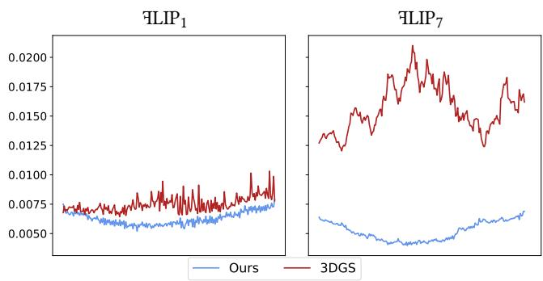
Fig. 11. Per-frame FLIPt scores for for a complete video sequence from the Garden scene. Popping in 3DGS causes significant peaks, as can be seen in the results for FLIP .
3DGS Cheating. To support our claim that 3DGS indeed cheats with popping to produce view-dependent efects, we provide additional images in Fig. 12. We choose a ground-truth view from Train and Garden and sample a random rotation from which we apply to the ground-truth camera rotation. Subsequently, we compare the rendering from the ground-truth camera pose and the rendering from the slightly rotated pose for 3DGS, as well as our method.
As can be seen, our approach produces more consistent results under view rotation. Due to 3DGS’s popping, the appearance changes significantly around test set views, which results in better image metrics in some configurations. In Fig. 12, we increase contrast for the zoomed-in views and provide FLIP comparisons to more clearly illustrate view inconsistencies.
D USER STUDY
For our user study we recruited 18 participants from a local university, age 26 to 34, all normal or corrected vision, no color blindness. All participants indicated that they are familiar with computer graphics (3-5 on a 5-point Likert scale).
We pre-recorded camera paths for all 13 scenes, looking at the main object present in the scene. For 3DGS and ours, we used the version specifically trained for these approaches without Opacity Decay. The paths all exhibit translation and rotation. The recorded video clips were between 8 and 19 seconds long.
After a pre-questionnaire, we instructed the participants that they will be presented with video pairs and they should specifically look for consistency in the rendering and then rate whether either of the video clips was more consistent than the other. If they did not consider any clip more consistent, they were allowed to rate them as equal. We mapped those answers onto scores �:
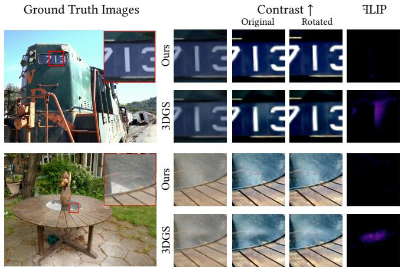
Fig. 12. 3DGS can fake view-dependent efects with popping. We slightly rotate test set views, and 3DGS’s results are significantly less consistent compared to our results. We increase contrast for zoomed-in views and include a FLIP view for a beter comparison.
We presented both videos side-by-side and played them in a loop. We did not restrict the answer times, allowing participants to watch the clips repeatedly. We randomized the order of videos (left, right) as well as the order of scenes.
Overall, participants considered our method more consistent in 54.3% of the cases, voted for equal in 33.3% and preferred 3DGS in 12.4%, leading to an average preference score of The result is statistically significant according to Wilcoxon Signed Rank tests [Woolson 2008]. As can be seen in Fig. 13, we observe inter-scene diferences. For scenes with mostly small Gaussians, like in Bonsai or Kitchen, we expected less diference in the voted scores, as there is also less popping. In contrast, for scenes with large Gaussians, where popping occurs more often, like Room, Train or Truck, it is not surprising that our method is preferred by a large margin. We were not able to assess why participants slightly preferred 3DGS for Bicycle.
E DETAILED PERFORMANCE TIMINGS
In this section, we provide additional performance ablation studies. We follow the evaluation setup from the main material, interpolating between all available COLMAP poses (30 frames per pose), and rendering in Full HD on an NVIDIA RTX 4090 with CUDA 11.8.
Per-Scene Performance Timings. In Tab. 9, we show per-scene performance timings for the total render time in ms. For the Mip-NeRF 360 [Barron et al. 2022] Indoor and Outdoor scenes, our method is slightly slower than 3DGS. For the Tanks & Temples [Knapitsch et al. 2017] and Deep Blending [Hedman et al. 2018] datasets, we achieve higher performance than 3DGS for most scenes. Analyzing the performance in more detail, we could verify that our method outperforms 3DGS when Gaussian are larger and/or more anisotropic, as our culling and load balancing can speed up rendering. If Gaussians are small and uniformly sized, the main load stems from the final stages of the render kernel, where sorting of course creates an overhead compared to 3DGS.
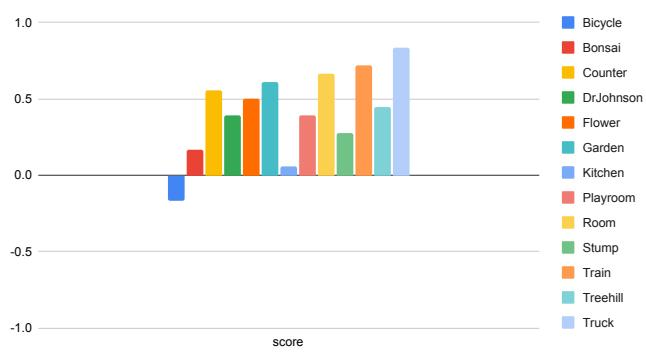
Fig. 13. Average per-scene user study score. A positive score indicates a preference for our method, whereas a negative score indicates a preference for 3DGS. Our method clearly outperforms 3DGS.
Table 9. Total performance timings for diferent configurations of our method and 3DGS, with the respective number of Gaussians per scene for comparison. Although scenes may exhibit a similar number of Gaussians, performance timings vary significantly.
| Scene #Gaussians | Bicycle 5.95M | Flowers 3.60M | Garden 5.49M | Stump 4.84M | Treehill 3.85M |
| (A) Ours | 6.829 | 4.921 | 7.247 | 4.693 | 5.012 |
| (B) Ours w/o per-tile depth | 6.730 | 4.693 | 7.160 | 4.509 | 4.879 |
| (C) Ours w/o load balancing | 8.482 | 6.732 | 9.167 | 6.496 | 6.919 |
| (D) Ours w/o tile-based culling | 10.066 | 7.338 | 9.796 | 6.584 | 7.884 |
| (E) Ours w/o hier. culling | 11.087 | 7.589 | 11.788 | 7.178 | 7.773 |
| 3DGS | 7.438 | 4.002 | 6.034 | 3.708 | 4.492 |
| Scene #Gaussians | Bonsai 1.25M | Counter 1.20M | Kitchen 1.81M | Room 1.55M |
| (A) Ours | 3.399 | 4.390 | 5.695 | 3.990 |
| (B) Ours w/o per-tile depth | 3.285 | 4.250 | 5.587 | 3.844 |
| (C) Ours w/o load balancing | 5.251 | 6.217 | 7.558 | 5.843 |
| (D) Ours w/o tile-based culling | 4.846 | 6.977 | 8.214 | 6.155 |
| (E) Ours w/o hier. culling | 4.608 | 6.142 | 8.916 | 5.450 |
| 3DGS | 2.574 | 4.043 | 4.783 | 4.180 |
| Dataset Scene | Deep Blending | Tanks & Temples | ||
| DrJohnson Playroom 3.28M | 2.33M | Train 1.05M | Truck 2.56M | |
| (A) Ours | 4.763 | 4.549 | 4.225 | 5.100 |
| (B) Ours w/o per-tile depth | 4.612 | 4.373 | 4.099 | 4.898 |
| (C) Ours w/o load balancing | 6.648 | 6.275 | 6.215 | 6.942 |
| (D) Ours w/o tile-based culling | 7.998 | 7.295 | 7.469 | 8.363 |
| (E) Ours w/o hier. culling | 6.418 | 5.999 | 5.675 | 7.113 |
| 3DGS | 5.752 | 4.303 | 5.548 | 5.506 |
Relative Performance Timings. In Tab. 10, we report per-stage performance timings of our method relative to 3DGS for each scene.
Preprocess is generally slower due to the additional workload of tilebased culling and computation of . Due to our load balancing strategy, our Duplicate stage is faster for every tested scene, except for Flowers — here, our load balancing scheme is not able to amortize the additional workload of per-tile depth evaluations and tile-based culling. Sort is accelerated drastically, as the modifications for the previous stages result in fewer 2D splats to sort. The Render stage is naturally slower due to the overhead of our hierarchical rasterizer.
Table 10. Relative per-scene performance timings of our method with respect to 3DGS for each stage. Shades of blue indicate scenes where our method performed favorably, whereas shades of red indicate the opposite. We also report average percentages in the final row (not average runtime).
| Dataset | Scene | #Gaussians | Preprocess | Duplicate | Sort | Render | Total |
| M360 | Bicycle | 5.95M | 1.38 | 0.65 | 0.19 | 1.40 | 0.92 |
| Flowers | 3.60M | 1.53 | 1.21 | 0.25 | 1.71 | 1.23 | |
| Garden | 5.49M | 1.27 | 0.78 | 0.29 | 2.04 | 1.20 | |
| Stump | 4.84M | 1.52 | 0.90 | 0.26 | 1.82 | 1.27 | |
| Treehill | 3.85M | 1.45 | 0.88 | 0.22 | 1.70 | 1.12 | |
| M360 Indoor | Bonsai | 1.25M | 1.32 | 0.84 | 0.25 | 2.06 | 1.32 |
| Counter | 1.20M | 1.46 | 0.75 | 0.17 | 1.80 | 1.09 | |
| Kitchen | 1.81M | 1.25 | 0.66 | 0.25 | 2.02 | 1.19 | |
| Room | 1.55M | 1.60 | 0.70 | 0.13 | 1.53 | 0.95 | |
| DB | DrJohnson | 3.28M | 1.60 | 0.62 | 0.12 | 1.36 | 0.83 |
| Playroom | 2.33M | 1.70 | 0.93 | 0.14 | 1.63 | 1.06 | |
| T&T | Train | 1.05M | 1.42 | 0.61 | 0.11 | 1.53 | 0.76 |
| Truck | 2.56M | 1.57 | 0.79 | 0.13 | 1.69 | 0.93 | |
| Average | 2.98M | 1.47 | 0.79 | 0.19 | 1.71 | 1.07 | |
As previously discussed, Bonsai and Train exhibit the biggest inter-method diferences despite the similar number of Gaussians due to diferently sized splats in screen space. Bicycle is the only scene of Mip-NeRF 360 Outdoor where our approach outperforms 3DGS. Although Garden has a similarly high number of Gaussians, Bicycle allows for more excessive culling and, therefore, has a significantly lower avg. �� for our method (2.7 vs. 2.41) compared to 3DGS (6.24 vs. 4.45).
Hyperparameter Performance Ablation. In Tab. 11, we compare timings for the Render stage for diferent size combinations of the 2×2 tile-queue and per-pixel queue. As expected, our final chosen values (8 and 4) perform best, since they have the lowest memory and compute requirements. Runtime increases significantly for very large per-pixel queue sizes, as register pressure increases and spills into local memory. In Tab. 11, we also show performance timings of the Preprocess and Duplicate stages for diferent load balancing tile thresholds (∞ = no load balancing). Gaussians whose 2D splat covers more tiles than this threshold will be computed cooperatively by all threads of a warp. Our chosen value of 32 performs well for both stages. Preprocess, which only performs tile-based culling, does not show large diferences and is even slightly faster for small thresholds. Duplicate shows significant improvements, as it performs many more computations per tile, i.e. tile-based culling, per-tile depth calculation, and key/value writes. Choosing a value of 32 also fits GPU warp sizes, and allows for better warp utilization, as well as fast concurrent memory writes.
F PER-SCENE QUALITY METRICS
We provide per-scene results for Mip-NeRF 360 [Barron et al. 2022], Tanks and Temples [Knapitsch et al. 2017] and Deep Blending [Hed man et al. 2018] in Tabs. 12 and 13. Results with dagger (†) were reproduced from Kerbl et al. [2023]: this includes results for Mip NeRF 360 [Barron et al. 2022], Instant-NGP [Müller et al. 2022] and Plenoxels [Fridovich-Keil et al. 2022]. We evaluate our final hierarchical rasterizer (“Ours”), as well as the fixed-size head sorting method for two diferent resorting window sizes (“Head 8” and “Head 16”), with and without per-tile depth (“w/o PTD”).
Table 11. Ablation of our method for diferent sizes of the 2×2 tile-queue and the per-pixel queue in addition to diferent load balancing thresholds, with the same underlying model (no retraining).
| 2×2 tile-queue per-pixel queue | 8 4 | 8 8 | 12 4 | 12 8 | 20 8 | 20 16 | |
| Render | 3.646 | 4.000 | 4.052 | 4.364 | 4.470 | 8.549 | |
| Threshold | 1 | 4 | 16 | 32 | 64 | 256 | ∞ |
| Preprocess | 0.644 | 0.643 | 0.648 | 0.648 | 0.649 | 0.652 | 0.847 |
| Duplicate | 0.607 | 0.541 | 0.437 | 0.435 | 0.447 | 0.515 | 2.059 |
Table 12. Combined per-scene scores for PSNR, SSIM, LPIPS and FLIP for Tanks & Temples and Deep Blending.
| Metric Dataset | PSNR | SSIM | ||||||
| Tanks & Temples | Deep Blending | Tanks & Temples | Deep Blending | |||||
| Scene | Truck | Train | DrJ. Playroom Truck | Train | DrJ. Playroom | |||
| Mip-NeRF 360† | 24.91 | 19.52 | 29.14 | 29.66 | 0.857 | 0.660 | 0.901 | 0.900 |
| Instant-NGP (base)† | 23.26 | 20.17 | 27.75 | 19.48 | 0.779 | 0.666 | 0.839 | 0.754 |
| Instant-NGP (big)† | 23.38 | 20.46 | 28.26 | 21.67 | 0.800 | 0.689 | 0.854 | 0.780 |
| Plenoxels | 23.23 | 18.94 | 23.16 | 23.02 | 0.774 | 0.663 | 0.787 | 0.802 |
| 3DGS | 25.39 | 22.04 | 29.06 | 29.86 | 0.878 | 0.813 | 0.898 | 0.901 |
| Head 8 w/o PTD | 24.79 | 21.52 | 29.40 | 30.29 | 0.877 | 0.809 | 0.902 | 0.905 |
| Head 8 | 24.81 | 21.41 | 29.51 | 30.31 | 0.878 | 0.810 | 0.904 | 0.905 |
| Head 16 w/o PTD | 24.84 | 21.60 | 29.40 | 30.36 | 0.878 | 0.810 | 0.904 | 0.905 |
| Head 16 | 24.81 | 21.36 | 29.44 | 30.31 | 0.877 | 0.809 | 0.903 | 0.906 |
| Ours w/o PTD | 24.93 | 21.53 | 29.44 | 30.31 | 0.878 | 0.810 | 0.903 | 0.905 |
| Ours | 24.93 | 21.48 | 29.42 | 30.31 | 0.878 | 0.808 | 0.903 | 0.905 |
| 3DGS (Opacity Decay) | 25.31 | 21.73 | 28.18 | 29.69 | 0.874 | 0.804 | 0.888 | 0.899 |
| Ours (Opacity Decay) | 24.90 | 21.46 | 29.38 | 30.30 | 0.875 | 0.804 | 0.903 | 0.907 |
| Dataset | LPIPS | LIP | ||||||
| Tanks & Temples | Deep Blending | Tanks & Temples | Deep Blending | |||||
| Truck | Train | DrJ. Playroom | Truck | Train | DrJ. Playroom | |||
| Mip-NeRF 360† | 0.159 | 0.354 | 0.237 | 0.252 | 0.162 | 0.302 | 0.117 | 0.158 |
| Instant-NGP (base)† | 0.274 | 0.386 | 0.381 | 0.465 | 0.194 | 0.297 | 0.141 | 0.375 |
| Instant-NGP (big)† | 0.249 | 0.360 | 0.352 | 0.428 | 0.190 | 0.291 | 0.133 | 0.311 |
| Plenoxels | 0.308 | 0.379 | 0.433 | 0.418 | 0.196 | 0.328 | 0.222 | 0.266 |
| 3DGS | 0.148 | 0.208 | 0.247 | 0.246 | 0.148 | 0.250 | 0.119 | 0.143 |
| Head 8 w/o PTD | 0.143 | 0.204 | 0.236 | 0.237 | 0.165 | 0.265 | 0.116 | 0.140 |
| Head 8 | 0.142 | 0.203 | 0.234 | 0.235 | 0.166 | 0.266 | 0.114 | 0.139 |
| Head 16 w/o PTD | 0.142 | 0.203 | 0.234 | 0.236 | 0.166 | 0.262 | 0.115 | 0.138 |
| Head 16 | 0.142 | 0.203 | 0.234 | 0.235 | 0.164 | 0.267 | 0.116 | 0.139 |
| Ours w/o PTD | 0.142 | 0.204 | 0.234 | 0.235 | 0.163 | 0.264 | 0.115 | 0.139 |
| Ours | 0.142 | 0.204 | 0.234 | 0.235 | 0.164 | 0.267 | 0.115 | 0.138 |
| 3DGS (Opacity Decay) | 0.160 | 0.228 | 0.265 | 0.260 | 0.148 | 0.261 | 0.124 | 0.144 |
| Ours (Opacity Decay) | 0.151 | 0.218 | 0.241 | 0.241 | 0.160 | 0.267 | 0.115 | 0.138 |
Table 13. Combined per-scene scores for PSNR, SSIM, LPIPS & FLIP for the Mip-NeRF 360 dataset.
| Dataset Scene | Mip-NeRF 360 Outdoor | Mip-NeRF 360 Indoor | |||||||
| Bicycle Flowers Garden Stump | Treehill Room Counter Kitchen Bonsai | ||||||||
| Mip-NeRF 360† | 24.30 | 21.65 | 26.88 | 26.36 | 22.93 | 31.47 | 29.45 | 31.99 | 33.40 |
| Instant-NGP (base)† | 22.19 | 20.35 | 24.60 | 23.63 | 22.36 | 29.27 | 26.44 | 28.55 | 30.34 |
| Instant-NGP (big)† | 22.17 | 20.65 | 25.07 | 23.47 | 22.37 | 29.69 | 26.69 | 29.48 | 30.69 |
| Plenoxels | 21.90 | 20.10 | 23.50 | 20.68 | 22.26 | 27.57 | 23.64 | 23.43 | 24.71 |
| 3DGS | 25.18 | 21.48 | 27.24 | 26.62 | 22.45 | 31.49 | 28.98 | 31.35 | 32.10 |
| Head 8 w/o PTD | 25.18 | 21.49 | 27.14 | 26.64 | 22.41 | 30.77 | 28.83 | 31.06 | 31.85 |
| Head 8 | 25.19 | 21.50 | 27.20 | 26.62 | 22.52 | 30.88 | 28.78 | 31.04 | 31.98 |
| Head 16 w/o PTD | 25.20 | 21.48 | 27.18 | 26.62 | 22.45 | 30.84 | 28.84 | 30.89 | 31.63 |
| Head 16 | 25.22 | 21.55 | 27.12 | 26.59 | 22.50 | 30.81 | 28.78 | 31.06 | 31.88 |
| Ours w/o PTD | 25.21 | 21.45 | 27.17 | 26.68 | 22.47 | 30.84 | 28.70 | 31.23 | 31.90 |
| Ours | 25.20 | 21.50 | 27.16 | 26.69 | 22.43 | 30.83 | 28.59 | 31.13 | 31.93 |
| 3DGS (Opacity Decay) | 24.93 | 21.30 | 27.05 | 26.57 | 22.39 | 31.03 | 28.64 | 31.07 | 31.52 |
| Ours (Opacity Decay) | 25.00 | 21.30 | 26.95 | 26.67 | 22.39 | 30.58 | 28.33 | 30.46 | 30.76 |
| Mip-NeRF 360† | 0.685 | 0.584 | 0.809 | 0.745 | 0.631 | 0.910 | 0.892 | 0.917 | 0.938 |
| Instant-NGP (base)† | 0.491 | 0.450 | 0.649 | 0.574 | 0.518 | 0.855 | 0.798 | 0.818 | 0.890 |
| Instant-NGP (big)† | 0.512 | 0.486 | 0.701 | 0.594 | 0.542 | 0.871 | 0.817 | 0.858 | 0.906 |
| Plenoxels | 0.495 | 0.432 | 0.606 | 0.523 | 0.510 | 0.840 | 0.758 | 0.648 | 0.814 |
| 3DGS | 0.763 | 0.603 | 0.862 | 0.772 | 0.632 | 0.917 | 0.906 | 0.925 | 0.939 |
| Head 8 w/o PTD | 0.766 | 0.602 | 0.862 | 0.773 | 0.633 | 0.917 | 0.905 | 0.925 | 0.939 |
| Head 8 | 0.766 | 0.604 | 0.862 | 0.773 | 0.634 | 0.916 | 0.905 | 0.924 | 0.939 |
| Head 16 w/o PTD | 0.767 | 0.603 | 0.861 | 0.773 | 0.633 | 0.917 | 0.905 | 0.922 | 0.939 |
| Head 16 | 0.767 | 0.604 | 0.861 | 0.773 | 0.635 | 0.917 | 0.905 | 0.925 | 0.939 |
| Ours w/o PTD | 0.767 | 0.603 | 0.862 | 0.775 | 0.635 | 0.917 | 0.904 | 0.925 | 0.939 |
| Ours | 0.767 | 0.604 | 0.862 | 0.775 | 0.635 | 0.917 | 0.903 | 0.925 | 0.939 |
| 3DGS (Opacity Decay) | 0.749 | 0.592 | 0.854 | 0.770 | 0.626 | 0.914 | 0.899 | 0.921 | 0.937 |
| Ours (Opacity Decay) | 0.756 | 0.593 | 0.855 | 0.775 | 0.629 | 0.914 | 0.898 | 0.920 | 0.935 |
| Dataset Scene | Mip-NeRF 360 Outdoor | Mip-NeRF 360 Indoor | |||||||
| Bicycle Flowers Garden Stump | Treehill Room Counter Kitchen Bonsai | ||||||||
| Mip-NeRF 360† | 0.305 | 0.346 | 0.171 | 0.261 | 0.347 | 0.213 | 0.207 | 0.128 | 0.179 |
| Instant-NGP (base)† | 0.487 | 0.481 | 0.312 | 0.450 | 0.489 | 0.301 | 0.342 | 0.254 | 0.227 |
| Instant-NGP (big)† | 0.446 | 0.441 | 0.257 | 0.421 | 0.450 | 0.261 | 0.306 | 0.205 | 0.193 |
| Plenoxels | 0.490 | 0.506 | 0.374 | 0.468 | 0.495 | 0.344 | 0.378 | 0.404 | 0.336 |
| 3DGS | 0.213 | 0.338 | 0.109 | 0.216 | 0.327 | 0.221 | 0.202 | 0.127 | 0.206 |
| Head 8 w/o PTD | 0.207 | 0.336 | 0.107 | 0.211 | 0.322 | 0.216 | 0.199 | 0.126 | 0.203 |
| Head 8 | 0.207 | 0.335 | 0.107 | 0.211 | 0.320 | 0.217 | 0.199 | 0.126 | 0.202 |
| Head 16 w/o PTD | 0.206 | 0.336 | 0.107 | 0.211 | 0.321 | 0.216 | 0.198 | 0.128 | 0.203 |
| Head 16 | 0.206 | 0.335 | 0.107 | 0.211 | 0.319 | 0.216 | 0.199 | 0.126 | 0.202 |
| Ours w/o PTD | 0.205 | 0.335 | 0.107 | 0.210 | 0.319 | 0.216 | 0.199 | 0.126 | 0.203 |
| Ours | 0.206 | 0.335 | 0.107 | 0.210 | 0.319 | 0.216 | 0.200 | 0.126 | 0.202 |
| 3DGS (Opacity Decay) | 0.244 | 0.358 | 0.125 | 0.232 | 0.347 | 0.230 | 0.215 | 0.137 | 0.210 |
| Ours (Opacity Decay) | 0.232 | 0.354 | 0.122 | 0.224 | 0.336 | 0.224 | 0.211 | 0.135 | 0.207 |
| Mip-NeRF 360† | 0.169 | 0.217 | 0.124 | 0.156 | 0.184 | 0.095 | 0.100 | 0.088 | 0.069 |
| Instant-NGP (base)† | 0.203 | 0.260 | 0.155 | 0.209 | 0.189 | 0.118 | 0.144 | 0.123 | 0.093 |
| Instant-NGP (big)† | 0.201 | 0.251 | 0.146 | 0.213 | 0.189 | 0.112 | 0.139 | 0.113 | 0.089 |
| Plenoxels | 0.211 | 0.271 | 0.181 | 0.276 | 0.206 | 0.143 | 0.201 | 0.218 | 0.165 |
| 3DGS | 0.158 | 0.225 | 0.118 | 0.150 | 0.186 | 0.093 | 0.105 | 0.096 | 0.082 |
| Head 8 w/o PTD | 0.160 | 0.223 | 0.120 | 0.150 | 0.184 | 0.102 | 0.107 | 0.100 | 0.086 |
| Head 8 | 0.159 | 0.223 | 0.119 | 0.150 | 0.181 | 0.101 | 0.108 | 0.099 | 0.083 |
| Head 16 w/o PTD | 0.159 | 0.224 | 0.119 | 0.151 | 0.182 | 0.101 | 0.107 | 0.103 | 0.086 |
| Head 16 | 0.159 | 0.222 | 0.121 | 0.151 | 0.183 | 0.102 | 0.108 | 0.099 | 0.085 |
| Ours w/o PTD | 0.160 | 0.225 | 0.120 | 0.149 | 0.183 | 0.101 | 0.110 | 0.099 | 0.085 |
| Ours | 0.159 | 0.224 | 0.119 | 0.149 | 0.184 | 0.101 | 0.111 | 0.099 | 0.084 |
| 3DGS (Opacity Decay) | 0.162 | 0.228 | 0.120 | 0.151 | 0.182 | 0.096 | 0.107 | 0.099 | 0.085 |
| Ours (Opacity Decay) | 0.162 | 0.228 | 0.122 | 0.148 | 0.182 | 0.103 | 0.112 | 0.106 | 0.090 |
md/2024_StopThePop__Sorted_Gaussian_Splatting_for_View-Consisten.md 预渲染生成（OCR 语料，插图取自原文）。
公式以 MathML 呈现，浏览器原生渲染，不依赖外部脚本或字体 CDN。